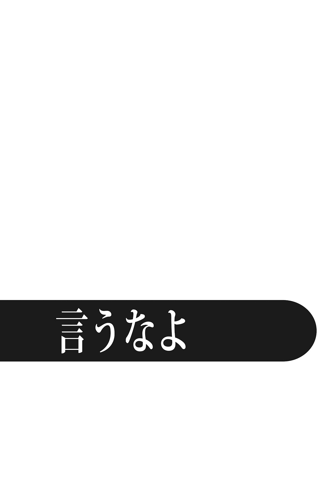
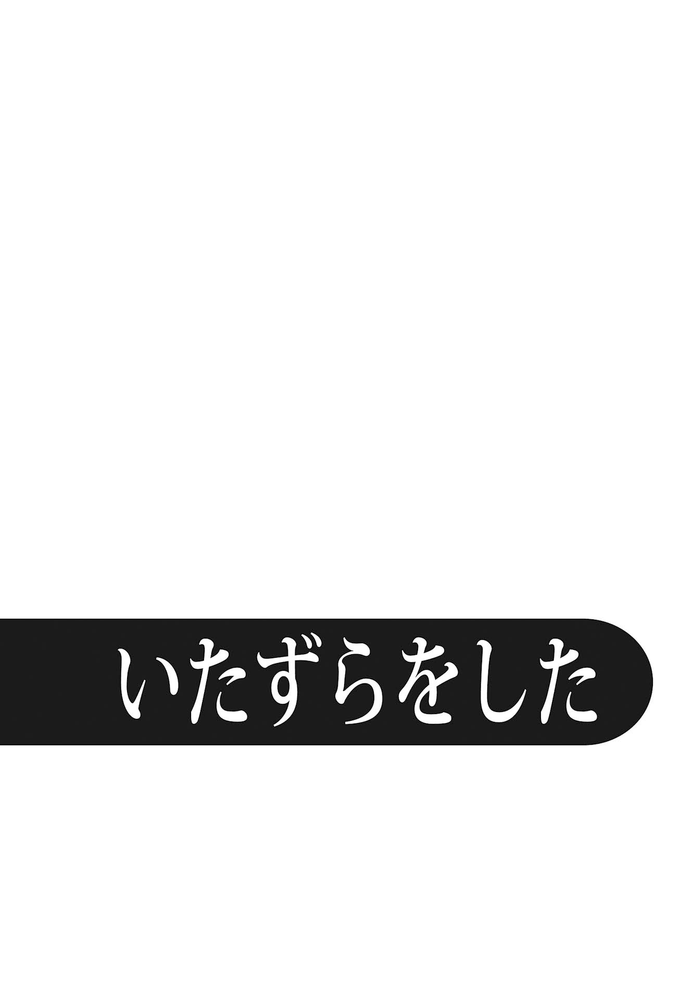
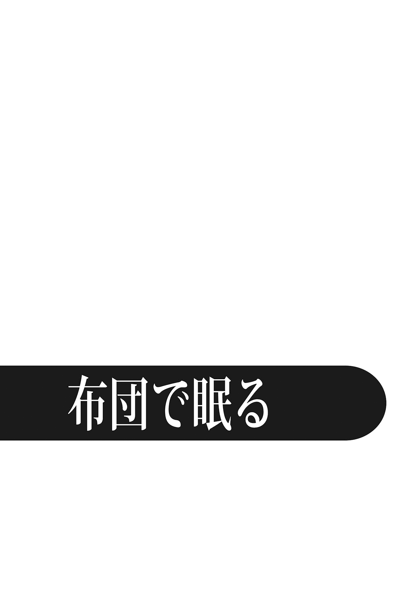
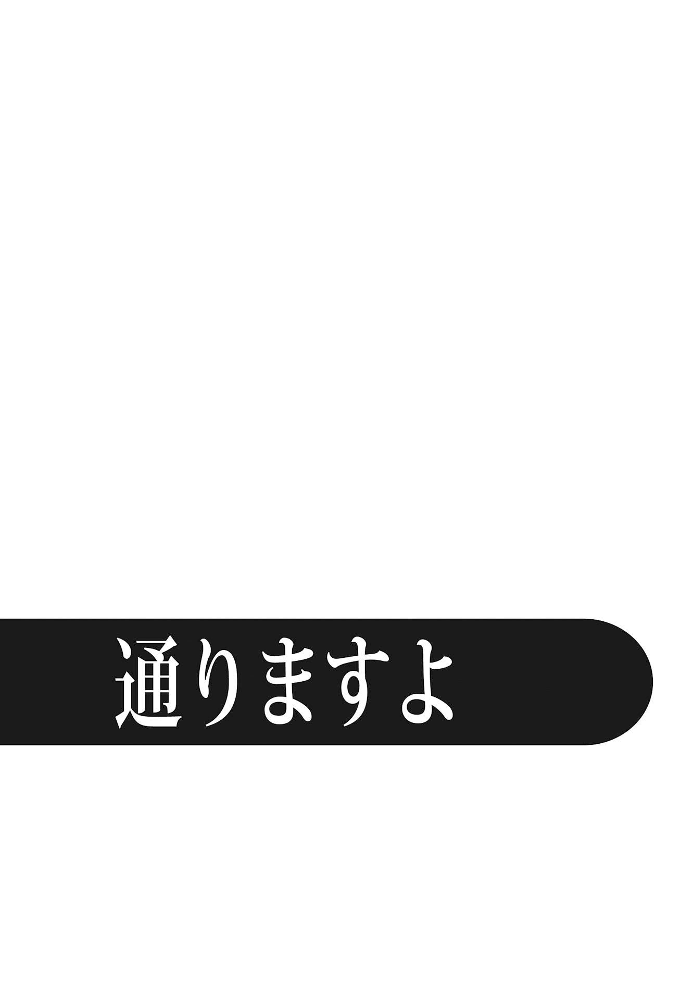
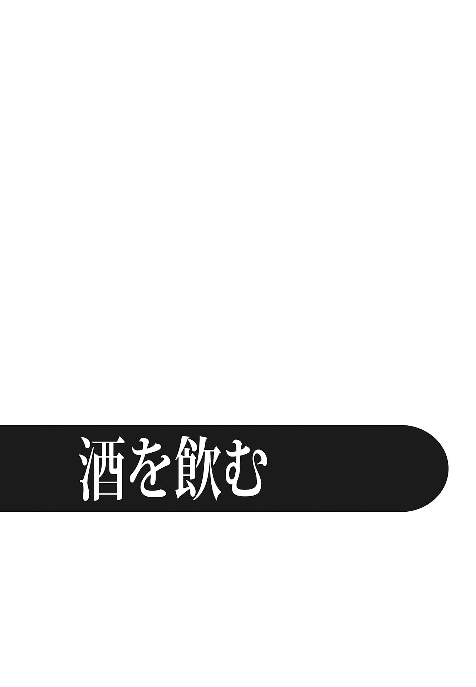
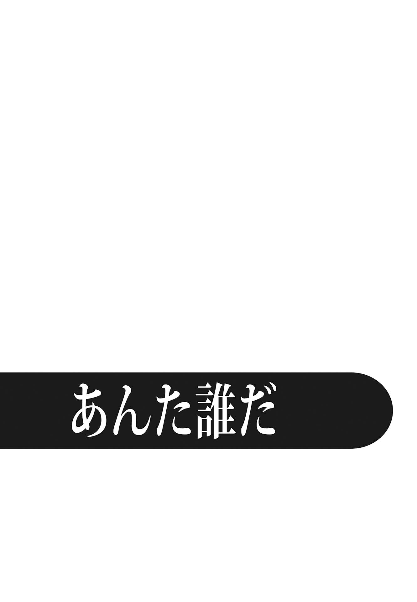

| 「弩」怖い話―螺旋怪談 (竹書房文庫) | |
| 加藤一 | |
| 竹書房 (2004) | |
この作品は縦書きでレイアウトされています。
また、ご覧になる機種により、表示の差異が認められることがあります。
一部の漢字が簡略字で表示されていることがあります。
まえがき
本当にあったとされる話を実話と呼ぶ。
ゼロから創作した話ならそれは小説だ。
では、実話と小説の境界線というのは、いったいどのあたりに存在するのだろう。
これが、本書「弩」怖い話～螺旋怪談～の苗床となった疑問だ。
誰かに聞いた話を下敷きにして怪談を書いたら、それは実話だろうか。小説だろうか。
オチが事実と書き換えられていたら、それは「事実に基づいてはいるが、あくまで小説」と言えるかもしれない。では、オチが原体験と同じままだとしたら、実話を書き起こす場合には、いったいどこまでの〈描写〉が赦されるのだろうか。
これは非常に厄介な問題だ。
聞いた話をそのまま一言一句変えずに書けば、それは百％実話と断言できるだろうか。
しかし、体験者自身が自分の記憶を自分で取捨選択しながら、そして印象に残ったことだけを手繰りよせながら語ったとしたら、それをそのまま書き起こしたものは、実話と言い切れるだろうか。体験者自身の記憶から抜け落ちている重要なキーワードを、著者が補完してもよいのだろうか。どこまでなら、それはオリジナルを損なわない〈肉付け〉として赦されるだろうか。
この問題は、怪談を書く多くの著者にとって、恐らくもっとも悩ましいテーマのひとつであるように思う。
本書「弩」怖い話～螺旋怪談は、ご愛顧いただいている本格実話怪談シリーズ・「超」怖い話の姉妹編と位置づけられている。「超」怖い話は、恐怖の実体験をＸ線で撮影しＣＴスキャン装置にかけて、病巣を浮かび上がらせるような手法を取っている。いわば引き算の怪談だ。それは怪談の輪郭を知るための、最上の方法のひとつと言えるだろう。
今回は、同じ実体験を題材としながら、「超」怖い話の技法とは異なるアプローチに挑戦してみることにした。遺体の頭蓋骨に粘土を盛りあげていくことで、骨から生前の顔を再現する復顔技術という犯罪捜査技術がある。「弩」怖い話においては、体験談という朽ちた骨に〈肉付け〉を行うことで、生前の苦悶と驚愕に満ちた表情を蘇らせることを大きな目的としている。こちらは足し算の怪談である。
蘇った怪談たちの顔を思い浮かべながら、本書を読み進めていただきたい。
加藤 一
※本書に登場する人物名は、様々な事情を考慮してすべて仮名にさせていただきました。また、一部のエピソードでは、登場する場所や体験者個人の特定を避ける必要から、登場人物の設定、実際の性別、地名などに変更を加えている場合があることをご了承ください。

大内が通っていた高校は、市街の山側にあった。
大内の自宅から、さほど遠くない。
遠くない、というのはバスや電車を乗り継ぐほどではないという程度で、それでも数キロの距離はあった。ただ、幼い頃から通い慣れた道を行くのに、自転車が要ると思ったことはない。
この高校の隣には小学校と中学校も建っていた。エスカレーター式の学校だったわけではないが、たまたま中学の隣にある高校を進学先に選んだものだから、学校と名の付く場所に通うようになってから、通学路は一貫して同じだった。
とはいえ、同級生の全てが大内と同じ選択肢を選んだわけではない。
県外の学校に進学した奴、滑り止めに流れていった奴などなど、幼なじみの多くはそれぞれの進路に向けて散り散りになっていった。
大内が二年に上がったとき、森田美由紀という後輩が入学してきた。
美由紀は大内の中学校の、陸上部の後輩でもある。
残念なことに彼氏彼女という関係ではないのだが、何かとウマが合うのか大内になついてくる。大内のほうからすれば馬鹿話のできる女子ということで、妹分のような気軽さがあった。
遠方から通う同級生は、みな自転車や学校前のバス停から散っていってしまう。
同じ陸上部、そして帰り道も同じ方向。顔なじみの気安さと徒歩通学組の連帯感もあって、大内と美由紀は、二人で一緒にのろのろと歩いて帰るというのが、その頃の毎日の習慣になっていた。
季節は冬。
遠くに霞んで見える山々は冠雪しているが、平野部に位置するこの街に雪が降ることはほとんどない。一日が短くなること、乾いた冷たい風が吹くことで、冬を身体に感じることができる。
もっとも、日が落ちるのが早くなるからといって、陸上の練習が早く終わるわけでもない。内輪の記録会か何かに備えた強化練習とやらに付き合わされた大内と美由紀が校門を出たのは、夕日が森の向こうに沈んで茜色の空が急激にくすんでいく頃だった。
美由紀の家は、大内の家に帰る途中にあった。
普段は馬鹿話に花を咲かせながら、というより、美由紀の話をあれこれと聞かされながら帰り道を行くのだが、この日は最近出たばかりの新刊を探しに少し離れた書店に寄り道をした。そのため、いつもよりやや遠回りになった。
書店を出た頃には辺りは真っ暗になっている。
「ここからだったら先輩の家のほうが近くないですか？」
「ああ、そうかも」
「今日は私が先輩を送っていきましょうか？」
「馬鹿」
ははは、と笑って歩き始めた。
慣れた街とは言え、まさか美由紀に夜道を一人で歩かせるわけにもいかない。大内はいつもと違う道を辿って、美由紀を家まで送り届けることにした。
書店と美由紀の家との間には、大きな墓場が広がっていた。
その墓場は、人通りの多い道から続く上り坂の途中にあった。
ここを避けると少々遠回りになる。しかし、いくら遅くなったからといって、日が落ちた後の墓場の中を突っ切っていくわけにも行かない。
街灯が点々と続き、家路を急ぐ人がぽつりぽつりと坂の上の住宅街に向かって歩いていく。
墓場は薄気味悪かったが、美由紀の前で「墓が怖い」とも言えない。
「このへん、コンビニとかできりゃいいのにねぇ」
そうですね、という返事を期待して話しかけたのだが、返事がない。
並んで歩いていた美由紀を振り向いた。
美由紀の顔は真っ青だった。
地面を見つめ、黙り込んでいる。
「......どした？」
美由紀は大内の問いには答えなかった。
そのまま、黙って坂を上っていく。
「おい」
──何か気に障るようなこと言ったっけ？
寸前までの会話を脳内で再点検してみる。しかし、怒らせるような話題は一つも出なかったはずだ。
「おいってば」
美由紀には聞こえていない。
いや、聞こえない振りをしようとしている。
聞こえているのに、必死に無視しようとしている。
大内は小走りに美由紀の後を追った。
すると美由紀は、坂道を駆け上るように歩調を早めていく。
──たたたたた！
──だだだだだ！
陸上で鍛えた二人の健脚は、だらだらと続く坂道を瞬く間に上り切る。
墓場から数百メートルも離れた頃、ようやく美由紀は足を止めた。
鞄を抱きかかえ、はぁはぁと荒く息をつく。
「......なんだってん」
だ、と言いかけたところで、美由紀は大内の言葉を遮った。
「先輩、どうともないんですか？」
「え？」
そりゃ、坂道ダッシュが楽とは言わないが、毎日やっている練習はもっとキツい。それを考えれば、改めてどうと言われるほど辛いものではない。
妙な行動を取った直後にしては、美由紀の質問は今更かつ当たり前すぎるもののように思える。
「いや、別になんてことないけど」
美由紀はじっと大内を見つめている。
心なしか、じわじわと後ろに下がり、距離を取ろうとしているようにも見える。
「......先輩が大丈夫なら、いいです」
「いいって、どういう」
美由紀は再び歩き始めた。
隣に並びかけると、まるで大内から逃げるように歩調を早める。
それから美由紀の家に着くまでの間、二人は無言のまま歩き続けた。
美由紀は、自宅の門扉に黙ったまま手をかけた。
大内には、美由紀の態度の意味するところがさっぱりわからない。
「じゃあ......」
一声かける。
美由紀はびくりとして動きを止め、恐る恐る振り向いた。
「また明日な」
玄関灯に照らされた美由紀の目は、大内に対して怯えているようだった。
翌日の昼休み。ごった返す購買前の混乱から抜け出したところで、美由紀に会った。
あれから何度考え直してみても美由紀が態度を変えた原因がわからない。美由紀を責めるつもりはないが、これまでの習慣が理由もわからないまま途絶えるのも厭だった。
「あのさ。オレ、昨日なんか気に障ること言った？」
美由紀はじっと押し黙っていたが、ちらちらと大内の背後を見ながら言った。
「あの......笑いませんか？」
「笑うって......」
「笑わないって約束してください！」
美由紀は真剣だった。
「わかったわかった。約束する」
大内が形ばかりの約束に同意すると、美由紀はぽつりぽつりと話し始めた。
「私、お墓嫌いなんですよ」
「オレだって好きじゃないよ」
「そうじゃなくて、お墓の近く通ると気分悪くなるんです。いっつも」
そういえば、これまでに学校から美由紀を送る帰り道、気分で道を変える、寄り道をするなどがあっても、墓場の近くを通ったことは一度もない。
「だから、あのお墓の近くを通るのも厭だなあって思って。で、他の道行きましょうよって言おうと思ったんですけど、なんかそれを切り出す前に、もう頭がぐらんぐらんしてきちゃって......」
途中から大内の話もよく聞こえてはいなかったらしい。
「それで先輩のほう見たんですけど......」
「けど？」
「先輩の腰に、女の人がしがみついてたんです」
美由紀は胴に腕を回す仕草をしてみせた。
女は血塗れだった。
衣服は千切れ、腰から下は肌が破れ肉が裂けて、足が形を留めていないほどズタズタに傷ついている。その女は大内の腰に腕を回し、振り落とされないようにギュッと抱きついていた、と美由紀は言った。
「......はぁ？」
「私、その女の人と目が合って......というか、私のほうをじっと見てるんです。もの凄い目で私を睨んで......」
美由紀は真剣だった。
「で、私に言うんですよ。〈言うなよ〉って」
言葉が出なかった。
「だから、先輩が何を言っても答えられなかったんです。だって、ずっとその人〈言うなよ、言うなよ〉って......」
笑わないと約束はした。
が、こんなときに出るのは、やはり笑いしかない。
大内は無意識のうちに、嗤っていた。
「な、ははは......」
「約束したでしょ。笑わないでください！」
美由紀は、大内の乾いた嗤いをぴしゃりと切り捨てた。
「ごめん」
美由紀がなぜ大内の背中を気にしていたのか、やっとその理由がわかった。
しかし、まさかとは思うが〈それ〉はまだいるのだろうか。
恐る恐る聞いてみる。
「あの、今は......？」
「もういないみたいです。あのまま、うちに置いていかれたらどうしようかと思ったんですけど......先輩、腰に女の人付けたまま行っちゃったんで、それはそれで心配でしたけど」
振り向いてみる。しかし大内には何もわからない。
美由紀は、にっこり微笑んで言った。
「そういうわけで、昨日はすみませんでした。今日は、いつもの道で帰りましょうね」

学生に〈タブー〉はない。
これは今も昔もあまり変わらない。
実際にはタブーがないわけではないのだろうが、学校という場所は社会の荒波に漕ぎだしていく前の時間を過ごす凪いだ入り江のようなもので、社会のそれとは違う時間と、通念が働いている。であるが故に、誰にも束縛されていないような錯覚に陥る。
大学生ともなれば、「学生自治」の名の下に好き勝手がまかり通るようになる。
受験から解放され、なお入り江の外に出るには幾ばくかの時間がある。だから、学生は無茶をする。今から三十数年くらい前など、官憲は大学の敷地内に立ち入ることすらできず、学生と機動隊が大学の門を挟んで睨み合うといった勇ましい時代もあった。
それでも昔はよかった、のだろう。無茶をしたいという捌け口を持っていく受け皿として、学生運動のような公然としたお祭りがあった。一人では参加しにくいデモも、仲間同士で結託すれば誰もがそれに身を委ねられる。遊び仲間は、友人であると同時に共犯者意識をも共有していたのだろう。
最近の学生にもタブーはあまりない。
昔の学生のような正義感溢れる発散方法は流行らなくなったが、それでもちょいと仲間内で集まってバカをやる、という風習が途絶えたわけではない。
その意味では、大内もまた典型的なニッポンの大学生であった。
気の合う仲間と集まっては、くだらないことに熱を上げる。
金があれば旅行のひとつにも行ったかもしれない。だが、学生というものは、概して金がないものと相場が決まっている。仲間の家に転がり込んで酒盛りをするのが関の山だが、毎日繰り返していくとそれも飽きてくる。
──なにかおもしろい遊びはないかな。
そんな暇つぶしの方法を考えあぐねているうちに、仲間の一人が閃いた。
「なあ、肝試しを〈仕掛け〉に行こうぜ」
そう言って大内のアパートを出て、仲間の車に三人ほどで乗り込んだときは零時を過ぎていた。
街灯がまったくない森を切り裂くように、隣の町へ続く幹線道路が伸びている。
隣町は山をふたつほど越え、この森を突っ切って谷をひとつ越えたその先にあった。町同士の境界線がはっきりしないような、都会で言うところの〈隣町〉とは違って、田舎は町と町の間が暗い山と深い森によって隔てられていた。街道は谷と谷を繋いで緩い大きなループを描き、アップダウンを繰り返す。灯りもなく鬱蒼とした樹々に挟まれた道の先は容易に見渡せない。
目的地は、隣町ではない。
その手前に横たわる鬱蒼とした森だ。名を長者ヶ森という。
ハンドルを握っている西村がルームミラーを覗き込んだ。
「丸山ゼミの二回生の......あいつ、知ってる？ ほら、関西弁の」
「小林だっけ」
「そうそう。あいつがさ、先週、長者ヶ森に行ったんだと」
その森は大きくうねりながら続く幹線道路に、両側から覆い被さるように広がっていた。周囲には鍾乳洞などちょっとした観光地があり、風光明媚な森を一望できる大きな駐車スペースがいくつかある。
「それが？」
「長者ヶ森のいちばんでかい駐車場があるだろ。ほら、展望台と売店のある......」
「ああ、長者ヶ森展望台な」
「あいつの話じゃ、あの駐車場って週末になるとカップルでいっぱいらしいぜ」
駐車スペースがあるのは長者ヶ森展望台だけではない。もっとも、そこを除けば駐車スペースと言っても、どこも谷側に向かって道路が少し膨らんだだけの場所だ。きっと見晴らしはいいのだろう。それが昼間であれば。
「いっぱいって、それは昼間の話だろう」
「いや、夜だよ、夜。車ん中でヤってるって話」
助手席の岡本は、ククク......と押し殺すように笑った。
「多いらしいぜ。長者ヶ森の駐車場って、灯りがないだろう。だから、そこに連れていって......ってね」
「なんで小林が知ってんの。それ」
「言わせるなよ。あいつも長者ヶ森でヤってたからに決まってんだろ」
森は真っ暗だった。
駐車場は森を抉り取るように作られていた。ヘッドライトから射す光は、樹々の合間に吸い込まれるばかり。街灯がないせいもあってか、想像していた以上に闇が濃い。
車を駐車場の隅のほうに止めてライトを消す。
何台かの〈先客〉がいるようだ。
大内たちは、ここに来るまでの間に簡単な打ち合わせをしておいた。
トランクを開け、先週のバンドの練習のときから入れっぱなしになっていたドラムとシンバルを持ち出した。
闇に慣れた目でそれらしい車に目を付けると、息を殺し忍び足で近付く。
微かに揺れている車をフロントガラス越しにこっそりと覗き見ると、車内の仄かな灯りに浮かび上がる人影が、もぞもぞと動いているのが見て取れた。
大内はドアの裏に隠れてシンバルを垂らすと、その縁を鉄の棒でつつーっとなぞった。
──くぅぅぅぅ 、くくぅぅぅぅぅぅぅぅぅ──
シンバルの擦れるそれらしい〈音〉を皮切りに、車の反対側に身を隠していた西村が、担いでいたスネアドラムを叩いた。
──ドゴドゴドゴドゴドゴドゴドゴドゴドゴドゴ......
同時に、カップルの潜んだ車のトランクに取りついた岡本が、バンパーを掴んでゆっさゆっさと揺すり始める。
たぶん、中のカップルは度肝を抜かれたことだろう。
窓越しにくぐもった女の絶叫が漏れ聞こえてきた後、車は沈黙していたエンジンを吹き返した。
甘いムードをぶちこわされた男は、膝まで下ろしたパンツを引き上げる暇もなくアクセルを踏み込むと、あっという間に駐車場の外に走りだしていった。
「......カハハ！ 速攻逃亡かよ！」
「うひー、逃げ足はえー！」
男のほうが車外に降りてくるのではないかと身構えていたのだが、あまりのあっけなさに笑いがこみ上げてきた。
楽しさが勝ってしまえば、罪悪感など微塵も浮かばない。
「次はどうするよ」
「そうさなあ......」
悪企みというものは、得てしてヒートアップする。
彼らもまた同様だった。
何台か車を揺らして回った。
こちらは姿を見せず、ドラムを叩きながら車を揺するだけのことだが、大半のカップルは度肝を抜かれてか、外を確かめもせずに逃げ出していった。
「なんで外に出てこねーのかな」
「バカ、ドア開けてなんか入ってきたらコエーからに決まってんだろ」
なるほどねえ、と納得したものの、〈揺する→逃げる〉の繰り返しが続くうち、だんだんそれにも飽きてきた。
「やっぱ、ビビってる奴らの顔が見えないとつまんなくねぇ？」
「でも、フロントガラス覗き込んでこっちの顔見られるのもヤベーしな」
売店の脇で小用を済ませてきた岡本が、小走りに駆け寄って小声で言った。
「おい。奥へ行こうぜ！ 森ん中！」
「なんで」
「遊歩道の先に展望台あるじゃんよ。ベンチのある。あそこにもいんだよ、カップル」
行こうぜ、と即決。
静かに土を踏んで近付いた大内たちは、展望台の少し手前の草むらの中に身を隠した。
ベンチの背もたれからは女の頭が、縁のほうからは男の足が見える。
仲睦まじいカップルの二人だけの時間を壊して何が楽しいのかと思うのは、自分が幸せな側にいる人間だ。大内たちに彼女の一人もいたら、きっとこんな夜中に男同士で連んで人の幸せを壊して喜ぶこともなかったろう。
〈これは暇つぶしであると同時に、自分より幸せな連中に対する報復であり、正当な根拠のある嫌がらせなのだ〉
そんなヘ理屈がまかり通ってしまうのも、学生だからかもしれない。
さっきと違って車を揺するわけにはいかないので、もう少し別の方法で驚かそう、ということになった。
ドラムとシンバルは使うとして、ここで何があったら怖いかを思案した結果、〈駆け寄ろう〉と岡本が言い出した。
はしゃいだ西村は上半身裸になってスタンバイすると、ドラムとシンバルの音を合図に甲高い叫び声を上げる。
「......ふぉぉぉぉ おぉぉおおおおおおおおおおおおおおおおおおっっっっっっっ！ 」
驚いたカップルが声のするほうを探してキョロキョロ見回すのを見た西村は、さらに大声で藪を漕ぎながら展望台のベンチに向かって全力疾走した。
上半身裸の男が叫びながら凄い勢いで近付いてくるのだ。
そりゃ驚くだろう。
幽霊以前の問題として。
カップルのほうも絶叫すると、衣服の乱れを直すのもそこそこに、森の外の駐車場目指して走り去った。
草むらで身を低くしていた大内と岡本は笑いが止まらない。
カップルを追い散らした西村は、ぜーぜーと息を上げながら戻ってきた。
「お、おもしれえけど......これはキツイ......！」
駆け寄る役を交替しながら何度か繰り返した。
森の中を通る遊歩道には、似たようなベンチがいくつかあったが、そのどれもにカップルが収まっているため、脅かす相手には事欠かなかった。
特に、森の中でも一際大きな樹の前は格好のポイントだった。ただでさえ暗い森の中なのに、この樹の下はより一層暗い。いちゃついていても、外からも見えにくい。この隠密性がカップルを引きつけるのか、脅かして追い払っても次から次へとカモが現れる。
しばらく続けていると、森の中は次第に霧に包まれてきた。暗さに加えて、この霧では脅かしも容易ではない。カップルを見つけにくいし、何より足下や障害物が見えないので駆け寄る役が危ない。
そのうち霧はどんどん濃くなり、近くにいるはずの仲間の姿どころか、自分の指先も見えないほどになった。
「......こりゃ、今日はもう無理かな」
仕方なく、〈続きはまた今度にしよう〉と脅かし道具を担いで森の出口に向かう。
ところが次第に霧が晴れてきた。
闇に慣れた目で森の奥を見渡すこともできる。さっきのポイントまで戻ってみると、視界を遮っていた霧は晴れ、いつの間にかまた別のカップルがベンチに陣取っている。
「なんだよなんだよ、キリがねえな」
西村は嬉しそうに言いながら、また上着を脱ぎ始めた。
すると、見る見るうちに霧が立ちこめてくる。
自分の足下が見えなくなるのに、ものの五分もかからない。
諦めて再び森の出口に足を向けると、霧はさっと晴れる。
「......森の中ってのがいけないんじゃねぇ？」
駐車場まで戻ってみると、空っぽだったスペースにまた数台の車が停まっていた。
最初のように、カップルの車に取り付いてドラムを構えたところ、森の中から漏れ出た霧がみるみるうちに辺りを埋め尽くす。
西村が合図を待って息を殺していると、岡本がそっと背中をつついて囁いた。
（......なあ、今日はもう止めとこうぜ......）
霧は晴れた。
夜は明け始めていた。
それでも前も後ろもわからないほどの濃い霧は、まるで雲の中にいるように思える。
手探りで車にたどりつき、トランクを開けるのと同時に霧は晴れた。
その間、エンジン音は何も聞こえなかったと思う。
しかし、霧の晴れた駐車場には、大内たちの車以外に一台も停まっていなかった。
女日照りの大内たちと違って、小林には彼女がいる。
三つ下の女子高生で、カオリと言う。
建前としては小林がカオリの勉強を見てやっている、ということになっている。いわば、家庭教師だ。本当のところは遊び仲間の小林が、カオリの家に上がり込むための口実に過ぎない。
しかし、娘の部屋に男がいるにしても、遊び友達と家庭教師とでは親の警戒心も扱いも全然違う。
「センセ、うちの娘はどうですか」
「カオリさんはそらもう頑張り屋やし、親御さんも安心しはってええと思いますワ」
小林は、カオリの両親の前では指導熱心な家庭教師を装う。
カオリはマジメに勉強をしている振りをし、親の警戒を緩める。
そうしておいて、素知らぬ顔をしてはちゃっかりカオリを食っている。
とはいえ、カオリの家でいちゃつくのには限界があった。両親が家にいることも多いし、建前だけでなく一応はカオリには勉強もさせねばならない。廊下の気配を察しながらあれこれしたところで、最後までいくにはリスクが高すぎる。
だから、二人はあれこれとうまい言い訳を考える。
──今日は気分を変えて外で勉強しよか。
──図書館で勉強はどないだ。
──ウチの大学、来へん？ キャンパスの雰囲気を知っとくのも肝心やで。
──よぉ勉強しとうから、今日はご褒美にどっか行こか。
「帰りはボクがちゃんと責任持って送りまっさかい、安心してもろて大丈夫ですワ」
そう言って両親を安心させておいて、当の小林がカオリに手を付けているわけだ。
とはいえ、貧乏学生の小林にはそうそうホテル代があるわけでもない。あったとて、ホテルにしけ込むほどじっくり時間が取れるわけでも、遅い時間まで連んでいられるわけでもない。
だから、ついつい〈外〉が増える。
アオカンという奴だ。
最初のうちは、外ですることには抵抗があった。
人目が気になる。いつ、誰に見られるかわからない。
したい気持ちより、羞恥心のほうが強い。
が、次第にカオリのガードが下がってきた。
よくよく見れば、さほど遠出をしなくても、ベッドの上でなくてもヤれそうな場所はある。少し前までは長者ヶ森にしけ込んでいた。あそこは暗がりがいっぱいあるし、同じ目的のカップルも多い。
が、小林がうっかり〈穴場〉であることを大内たちに話したところ、モテナイ君の僻みからか、奴らはせっかくの穴場をずいぶん荒らし回ったらしい。
長者ヶ森に代わる人目に付きそうにない所を物色するうちに、白昼の盲点とも言える絶好のポイントを見つけてきたのは、カオリのほうだった。
「センセ、いいとこ見つけたよ」
カオリに手を引かれてやってきたのは、杜に囲まれたお社だった。
「いいとこって、ここ神社やないか」
「そう、神社。お稲荷さんなの」
神社と一口に言っても、川崎や諏訪にある〈大社〉と呼ばれる大きなものから、その近辺在所の土地を鎮める氏神様クラスのものまで、その規模は様々だ。信心の厚い人々がひっきりなしにお賽銭を投げにくるような、または宮司が常駐しているような神社では、そうそう忍び込むわけにもいかない。
「お稲荷さんて、あんまり人いないんだよ。神主さんもいないしさ。それにこのへん、林に囲まれてるじゃん？ 幟とかいっぱい立ってるし、柵あるし、鳥居たくさんくぐらないと中に入れないから、表通りから見えないしさ。なんか、ラブホの廊下みたいでよくない？」
知らないというのは怖いもので、カオリはさらりと言ってのけた。
知らないというのは怖いもので、小林もカオリの着眼点に納得した。
「せやな。ここなら、外から見ぇへんしな。ほんなら......」
いつもなら慌ただしく済ませるところだったが、この神社の境内には人の気配がまるでない。見れば社の奥にしまわれているのか賽銭箱すらない。礼金を受け取るつもりもなければ願掛けを引き受ける気もない、ということか。
宮司がいないともなれば誰が寄りつくわけでもないらしく、お参りに来る人の姿もない。平日の午後ともなればなおさらだ。
いつもよりたっぷり時間をかけて楽しんだ二人が、ようやく満足したのは日もだいぶ傾いた頃だった。
「......あー、そろそろ帰らなアカンのちゃう？」
ごそごそとしまいながら小林が火照った顔を上げると、カオリはしっとり湿った唇を擦って頷いた。
「カオリ、家まで送るワ」
「ううん、大丈夫。一人で帰れるからー」
カオリは目を細めると、立ち上がってスカートの皺を伸ばした。
「それじゃ、センセ。また今度ね！」
その翌日は日曜だった。
カオリの身に異変が起きたのは、昼過ぎのことだ。
「カオリ！ いつまで寝てんの。起きなさい！」
階下から声をかけても娘は一向に起きてくる気配がない。
業を煮やした母親は、階段を踏みならしながら声を張り上げる。
「アンタ、ホントにいい加減にしなさいよ！」
ドアをガンと開いてみると、娘の足がベッドの縁から見えた。
いつまでも布団から出てこないカオリを寝床から引っ張り出そうと、室内に足を踏み入れた母親は一瞬後、絶句した。
カオリは確かに寝床に横たわっていた。
ぼんやりと薄く開いた目は妙に釣り上がっている。
肩を小刻みに震わせて、小さく息をついている。
開いた唇の端から、糸を引いて涎が垂れている。
赤く上気した頬、うっすらと汗ばむ額。
掛け布団は床の上に落ちている。
そして......カオリは剥き出しになった下半身に自分の両手を這わせていた。
「カオ......あんたっ、なっ、何してるの！」
母親はそれを叱った。
怒りより、自分を取り戻すために声を荒げた。
しかし、カオリは母親の声に一向に気付く様子もなければ、自分の指を止めもしなかった。頻りに唇を舐め、時折自分の指をしゃぶりながら、さらに臍の下をまさぐることを止めない。
──取り憑かれたように。
そう、取り憑かれたようにだ。
母親はカオリを引き起こすと、なおも続けようとする娘の指を引きはがし、背中を思い切り叩いて怒鳴った。
「止めなさい！」
何も見ていなかったカオリの目が一瞬、虚空を凝視する。
糸の切れた操り人形のようにガクンとうなだれると、顔を上げ揺り起こした母親の目を見た。そして、剥き出しの下半身とべとべとの指に驚いた。
「なっ、お母さん！ 今、何してたの？ あたし、何してた？」
「あんた......」
カオリは自分のしていたことがわからなかった。
そんなもやもやした気持ちではなかったはずだ。
母親が入ってきたことにも気付かなかった......というより、自分が何をしているかも母親に止められるまでわからなかった。
自分が、わからなかった。
娘のその姿は、きっと誰が見ても尋常なものではなかっただろう。とはいえ、誰かに相談できるようなことではない。父親にすら相談できない。カオリ自身も要領を得ず、母親はそれ以上どうすることもできなかった。
「まあ......なんでもないのよ。疲れてるのよ......」
そして月曜。
午後の講義が休講になったので、小林は時間を持て余していた。
近所の書店でカオリのための参考書を選んで、彼女の家に向かう途中。小さな児童公園の前を通りがかると、子供の手を引いてそそくさと立ち去る数人の母親と、入れ替わりに公園に集まってくる中学生でちょっとした人垣ができていた。
「なんや？」
軽い好奇心が湧いた。
覗き込んでみると、中学生の頭越しにベンチに座るカオリが見えた。
「おー、何し......」
驚いた。
カオリはベンチにしゃがみ込むようにして座っていた。
どこか遠くを見るような、もしくは何も見ていないような虚ろな目。
頻りに唇を舐める舌。
制服のスカートも下着も、乱雑にベンチの背もたれに投げ出してある。そして、下半身は剥き出し。
その下半身にせわしなく指を這わせている。
「......おおおおお、おい！ オマエ、何しとんのやあああ！」
小林は人垣を掻き分け、カオリの腕を取った。
「ああ、センセェ......」
カオリは小林の顔を見るなり、パッと明るい表情になった。
「いきたい。いこ。いきたいよ」
「うん、わかった。いこう。......いくからともかくスカート履き」
自分の上着をカオリにかぶせると、手早くスカートを履かせた。
下着なんて後でいい。事情を聞くのも後でいい。
今は一刻も早くここから立ち去らなければ。
好奇の目で群がる中学生を押しのけた小林は、カオリの手を引いて足早に公園を出た。半ば駆け出すくらいの勢いだ。
カオリの手を引いて足早に歩いていた......はずなのだが、気付くとカオリが小林の手を取って小走りに先導していた。
「おい。カオリ、どこ行くんや」
「センセェ、いこう？ いきたい」
「どこやねん。どこに行きたいねんな」
カオリは振り向いて肩越しに笑みを浮かべた。
「神社」
「オマエ......」
「神社......いきたい」
引き連れられてたどり着いたそこは、あの稲荷神社の前だった。
「センセェ、あたし〈神社で〉イきたいのぉう。一緒にイってェ......」
そう言うと鳥居の奥に駆け込み、スカートを捲り上げて公園の続きを始めようとした。
「......カオリ、オマエどないしたんや？」
只事ではない。
もう絶対におかしい。
腕を払っても、声をかけても、何をしてもカオリはそれを止めようとしない。
彼女の家に連れていくべきだろうか。
しかし、なんと説明する？
お宅の娘さんが公園で一人でして、晒し者になっていたんで連れてきました。
まさか、そんな説明をするわけには行かない。
病院にでも連れていくべきなのかもしれない。しかし、そうなったらカオリは......。
考えあぐねていたところに、携帯が鳴った。
小林の自宅からだ。
こんなときに......と通話に出ると、耳元で母親が大声を張り上げた。
〈タカシ？ 今、山本のオバさんから電話あってな。今すぐ来い言うとったよ〉
「オカン、オレ今それどこやないねん！」
〈ええから。彼女、一緒におるんやろ？ 彼女も一緒に連れて来いて。あんた、すぐ行きや。ええか、今すぐやで！〉
母親は用件だけ言うと電話を切った。
タクシーはなかなか拾えなかった。
もぞもぞと動くのを止めないカオリを押さえ付けて、やっと拾ったタクシーの運転手に行き先を告げる。母親に言われた〈山本のオバさん〉の元に着くなり、血相を変えて玄関に立ちはだかる伯母が二人を一喝した。
「あんたらもう、一体何してるの！」
いきなり呼びつけられ怒鳴られて、小林も事情が飲み込めない。
が、伯母はそんなことは構わず、なお二人を叱りつけた。
「あんたら、お稲荷さんで罰当たりなことするからこんなことになるんだよ！」
「なっ、なんで？ オバちゃん、どしてそれを」
伯母は右手に巻いた数珠でカオリの背中を叩きながら、小林を睨み付けた。
「エッチなことしてたんでしょ？ わかんのよ。バカやってるとすぐに」
平たく言えば、カオリには狐が憑いていたということらしい。
心当たりは確かにそれしかないが、そんな馬鹿なという気持ちは今も強い。
でも、カオリが狐みたいな顔になっていたことは確かだし、二人だけしか知らない神社での秘め事を伯母は知っていた。伯母に霊感があるという話はずっと冗談だと思っていたが、信じないわけにもいかなくなってしまった。
ともあれ、少なくともひとつだけハッキリしたことがある。
神社でアオカンはするな、ってことだ。
〈タブー〉は破って酷い目に遭ってみないと懲りない。
それが学生というものなのだ。

人間はいつかは死ぬ。
予め兆候を見せ、時間を掛けてだんだんと衰弱していき、最後に眠るように息を引き取る。そんな当人にも周囲にも十分に心の整理が付けられるような死に方ができるなら、それに越したことはない。大往生という奴だ。むしろ、喜ぶべき死かもしれない。
また、兆候や衰弱といった命の灯火が自然に消えていく死に方ではなく、ロウソクを吹き消すように無理矢理その命を閉じてしまう方法もある。自殺という奴だ。これはこれで、本人が覚悟の上でするなら致し方ない。
しかし、多くの人間は自分が死ぬことについて、十分な自覚も覚悟する暇もなく死を迎える。不慮の事故であったり、または唐突に襲い来る発作であったり。
当人も周囲も心構えができていないうちに訪れる死は厄介だ。
岡本は実家暮らしだった。
連夜遊び歩いて帰る息子を、渋い顔で説教するのが彼の父親の日課になっていた。
「おまえ、いつまで学生気分でいるんだ。普通、大学も三年になったら就職のことにもう少し必死になるだろう。遅くまで遊び歩いて、家にも金入れないで......」
女子高生なら門限のひとつがあってもおかしくないだろう。
しかし、大学生、二浪して二十二歳の男を捕まえて、門限云々を言うのもどうなのか。
「オヤジー、いい加減、勘弁してくれよ。オレだって女子供じゃないんだ。遅く帰るくらいどうってことないだろ」
「なぁにぃぃ？ そういうことは、一人前になってから言え！」
岡本がやっとの思いで大学に入ったとき、彼の父親はもう定年を目前にしていた。年上女房だった母も数年前に他界し、今この家は岡本と父親の二人暮らしになっている。
遅くなってからできた一粒種ということもあってか、父は父なりに不肖の息子を可愛がり、なおかつあれやこれやと厳しく躾けようと接した。
岡本がそうした厳しい父親に従順に従っていたのは高校生の頃くらいまでで、浪人して予備校に通っている間に、自宅生ながらだんだんと親離れが進んだ。
歳を考えれば遅いくらいだが、父親としては息子が一人で育ったような顔をして自分から離れていくのが我慢ならなかったのだろう。
「まだまだおまえは子供だ。早く一人前になれ！」
その日、岡本が帰宅した時間は限りなく朝に近い時間だった。
午前様というより、朝帰りだ。
オヤジはとっくに寝ているんだろう......と和室を覗くと、床の間の床柱にもたれかかったままじっと腕を組んで目を閉じている。
どうやら待ちくたびれてそのまま寝入ってしまったらしい。
ぴくりともしない父親の姿を見て、さすがに岡本も申し訳ない気持ちが現れたのか、軽く声を掛けた。
「......オヤジ、そんなところで寝ると風邪引くぞ。布団に入れよ」
しかし父親は眠り込んでいるのか返事がない。
「しょうがねえなぁ......おーい、オヤジ」
肩に手をかけると、身体が冷たい。
首筋も冷たく、顔は妙に黄ばんでいる。
「......オヤジ？」
肌が固い。
そっと口元に手をかざしてみるが、もはや呼気はなかった。
父親の死因は、心臓関係の疾患によるものと診断された。
息子に心配をかけるわけにはいかないから、という父親の配慮で岡本には知らされてはいなかったが、かかりつけの医者によればこの数年ずっと心臓に不調を抱えていた。父親はずっとそのことを隠していた。
葬儀の最中、親類や坊主、葬儀屋、かけつけた友人や会ったこともない父親の勤め先関係の人間など、どこから集まってきたのかと不思議に思えるほど多くの人間が家の中を出入りした。必要なことは葬儀屋がほとんどやってくれるので、岡本は喪服を着て座っているだけでいい。
たった一人になってしまった岡本に、親類は形ばかりの慰めをかけたが、岡本はどう答えたらいいものか、今ひとつピンとこない。
もっとも、当の岡本にしてみれば、突然のことすぎて悲しみも感慨もない。母親のときのほうがもっと悲しかった気がするくらいだ。
線香臭い一夜が明け、岡本の代わりに親類を駅まで見送った葬儀屋が恭しく頭を下げて引き上げた後、やっと岡本は一人になった。
居間は祭壇に占領されていて、一息吐くのにはあまり向いていない。
結婚式疲れというものがあるが、葬式もまた疲れるレセプションだ。
父親と二人暮らししているときにはさほど広さを感じたことがない家だった。しかし、怒濤のような弔問客が去り、そして自分一人だけになってしまうと、これほど薄ら広く感じるものとは思いもしなかった。
岡本はネクタイを緩めて枕を抱えると、寝床を求めてふらふらと立ち上がった。
かつて父親の寝室だった、そして父親が一人寂しく息を引き取った部屋は、祭壇を置くのには狭すぎるということでそのままにされていた。
主のいない部屋の押入から父親の布団を引きずり出し、布団を被る。
連日の疲れのせいもあったのだろうか、岡本はそのままとろけるように眠り込んだ。
夜更け過ぎ。
ふと目が覚めた。
寝返りを打つと、床の間に父親が座っている。
〈オヤジ......〉
父親は固く組んでいた腕を解くことなく、岡本の寝顔を窺っているようだった。
心配なのだ。
死にきれないのだ。
息子が一人前になったと認めるまで、このまま憑きまとうつもり、のようだ。
西村の家は両親と西村、それに下の弟の洋介の四人暮らしだ。
去年の春までは姉も一緒に暮らしていたのだが、就職で家を出た。
その姉が、連休に合わせて帰ってきた。
帰ってきた早々ラフな格好に着替えた姉の智子は、リビングに大の字になった。
「いやあ、やっぱ実家はいいよねぇ。楽で」
母は智子が脱ぎ散らかした服を拾い集めながら言った。
「自分でしたいって言ってひとり暮らし始めたんでしょうに。何、贅沢言ってんの」
「だって、ほら......アパートだとご飯とか自分で作らなくちゃならないけど、実家だったら上げ膳下げ膳で、洗濯だってしてもらえるわけじゃない」
一人暮らしをすると勇んで出ていった智子だが、暮らし始めて半年もしないうちに転がり込んできた彼氏と一緒に同棲を始めた。そのことを西村は知っているが、両親はまだ知らない。
「一人で暮らすと親のありがたさが身に染みるでしょう？」
「ハイ、まったくもって仰るとおりです」
智子は母に頭を下げた。
文句を言いつつも、娘にありがたがられるのは母も悪い気分ではないらしい。
「せっかく帰ってきたんだから、少しは親孝行していきなさいよ。親孝行、したいときには親はなしってね」
智子のいた去年までは、西村家の子供部屋は二つに分かれていた。
曰く、男部屋と女部屋。
智子が年頃になった頃に父の一存で分けたのだ。その結果、西村は四歳下の弟とまとめて六畳間に押し込められ、姉が一人で一室を占拠することになった。
「母さん、あたしの部屋は？」
「あんたの部屋なんか、もうあるわけないでしょ」
出ていった者の部屋を空けておく道理はない。智子が家を出たことで、一部屋に押し込められていた西村と弟は、ようやく「自分だけの城」を持つことができた。
智子の部屋だった日当たりのいい洋間には西村が移り、六畳間は末弟が占領している。
「じゃあ、あたしはどこで寝たらいいワケ？」
「奥の和室使いなさい。あんたの部屋にあった荷物もそっちに運んであるから」
〈奥の和室〉と呼ばれる部屋は、南西の路地裏に面した濡れ縁のある部屋だ。
子供の頃、ここは祖母の部屋になっていた。障子の奥を覗き込むと、縁側にちょこんと座った祖母が幼い智子に和菓子をくれたものだ。初孫だったこともあって智子はことのほか祖母に可愛がられた、おばあちゃん子だった。
もっとも、その祖母は西村が生まれてすぐくらいに鬼籍に入ったというから、祖母との思い出を覚えているのは姉弟の中では智子くらいのものだろう。
その夜のこと。
積み上げられた荷物の隙間に布団を敷いて、智子は早々に床に就いた。
どちらかと言えば智子は寝付きはいいほうだ。
しかし、この日は横たわって目を閉じてもなかなか眠気が起こらない。
頻りに寝返りを打ったり、羊を数えてみたりと試みるのだが、寝ようと思えば思うほど眠れなくなる。遙か昔、試験前にはそういうこともあったが、なぜ今......？
諦めて冷蔵庫からビールでも漁ってこよう......と思い立って、起き上がろうとしたところで初めて身動きが取れないことに気付いた。
金縛りだ。
仰向けになったまま、身体はぴくりとも動かない。
瞼は重く、声も出ない。
〈ちょっ...... なんでぇ？〉
これまで、実家でこんなことは一度もなかったはずだ。ちょっと家を空けている間に、実家がお化け屋敷に変わってるなんて思いも寄らなかった。
そのとき、掛布団が微かに動く気配があった。
そして、枯れ木のような手が、智子の左腕をそっと握った。
「ぎゃあああああああああああああああああああああああああ！」
智子の絶叫が西村家に響き渡った。
晩酌をしていた両親も、風呂に入っていた西村も、受験勉強中の末弟も全員が何事かと奥の和室に駆けつけた。
見ると、智子は掛布団を部屋の隅まで蹴り飛ばした姿勢のまま失神している。
末弟の洋介はぼそりと呟いた。
「......姉貴、相変わらず寝相悪ぃな」
寝ぼけていたのだ、ということで家族にそのまま放置された智子が目を覚ましたのは、翌朝のことだった。
怖かったという気持ちよりも、そのまま放置されていたことがよほど腹立たしかったのか、智子は憤慨して言った。
「昨日の夜！ 金縛りに遭ってたんだから！ 誰かがあたしの腕を握ったのよ！」
「夢見が悪かったんじゃないの？」
「そんなことない！ 誰か......なんか凄く皺くちゃの手にギュッて握られて......見てよ、ほら！」
捲り上げられたパジャマの袖の隙間から見える智子の腕には、確かに「手形」らしき痕が付いていた。
「そんなこと言ってもねえ。この家でもう三十年は暮らしてるけど、うちには化けて出るような人は......あ。いけない」
そこまで言いかけて、母は思い出した。
「お父さん。今日命日じゃないの？ ほら、おばあちゃんの......」
「あっ......」
どうやら、家族全員がそのことを忘れていたので報せにきたらしい。
「ま、智子はおばあちゃんのお気に入りだったからなぁ。おばあちゃんも家族が全員揃ってるときを狙ってたんだろう。どうだ。午後から墓参りでも行くか？」
この後、西村家全員がそれぞれ午後の予定をキャンセルし、祖母の墓前で手を合わせたことは言うまでもない。

慌ただしく帰ってきた智子は、慌ただしくアパートに戻っていった。
「もっとゆっくりできるのかと思ってたのに」
「そりゃ私だってゆっくりするつもりだったんだけど、予定外のお墓参りとかしちゃったからね」
智子の母・西村瑞恵は、娘との別れが名残惜しいのか、せめて駅まで送るからと言い張った。
家の車は息子が乗っていってしまったので、「営業車を呼ぶから」と馴染みのタクシー会社に電話を入れ、持たせた土産で大荷物になった娘を最寄りの駅まで送り届けることにした。
このタクシー会社は瑞恵の知り合いが勤めていることもあって、西村家がタクシーを使う用事があるときには必ずここでと決めていた。
家の前で待っているとタクシーがやってきた。
「毎度──」
と降りてきた運転手は、瑞恵の知らない顔だ。
頻繁に利用することもあって、この会社の運転手のほとんどをよく見知っている瑞恵だが、この顔は初めて見る。
瑞恵は娘に持たせた荷物を積み込むため「トランク開けてもらえないかしら」と頼んで、後ろを開けさせた。
──バグン。
音を立てて開いたトランクの蓋を持ち上げると、何か〈ムッ〉としたものがこみ上げてきた。
「どうしたの？ お母さん」
「え、ううん。なんでもない」
荷物を積み込むと、先に智子が乗った。それに続いて瑞恵が車内に乗り込もうとすると、これまた何か「ムッ」とする。
車内にはこれといって原因らしきものは見当たらないし、異臭が漂っているわけでもない。
ただ、ドアが開いた瞬間、厭な感触が内側から湧き出てきた。まるで何かに押し返されるようだ。
顔を顰めドアの外で逡巡する瑞恵に気付いて、新顔の運転手が声を掛ける。
「どうかしました？ ......乗らないんですか？」
「あ、いえ。乗ります。乗りますから」
瑞恵はかぶりを振って後部座席に身体を押し込んだ。
「いつもうちの会社をご利用いただいてるそうで──」
新顔の運転手はルームミラーを覗きながら、馴れ馴れしく話しかけてきた。
乗務員の名前を示したプレートには、〈古賀〉とある。やはり知らない名前だ。
「いやもう、お得意さんだからキチンとしろって言われちゃってて」
一人はしゃぐように話し続ける運転手の声が、耳障りだった。
ふとルームミラーを覗くと、こちらを凝視している運転手と目が合った。
何か気持ちの悪い目だ。
ふらついて押し黙る瑞恵に気付いて、娘が心配そうに母親を気遣う。
「どうしたの、お母さん。車酔い？」
車酔い、ましてや、よく使うタクシーに酔うことなど、今までに一度もなかった。
瑞恵は不信に思いつつ、ルームミラーを見た。
ちらちらと盗み見るようにこちらに視線を向けている古賀という運転手の他に、何か黒いものがふらふらと映っている。
最初、自分の頭かと思った。
しかし瑞恵自身の姿はそれとは別に映っている。
次に隣に座る娘の頭かと思った。
しかし娘の頭が、瑞恵の頭の隣ではなく背後に映るのはどう見てもおかしい。
朦朧としかかってきたところで駅に着いた。
「お客さん、着きましたよ」
にこやかに笑って振り向く運転手に料金を払い、慌てて車外に降りる。
降りると同時に気分がスッと軽くなった。
トランクを開けさせると、あのムッとした気分が甦ったがそれもすぐに消えた。
「そのへんで待ってて、帰りも送りましょうか」
運転手はそう笑って話しかけてきたが、瑞恵は「買い物があるからいいわ」と笑みを捻り出して答えた。
買い物を済ませて駅前からの帰り、ロータリーのタクシー乗り場で拾った車の運転手は、見知った顔だった。
瑞恵はホッとして乗り込んだ。もちろん、不調はない。
〈──不思議なこともあるものね〉
「さっきね、お宅の車に乗ったら車に酔っちゃってねぇ」
「え、そうなんですか」
話しかけられた向坂という若い運転手は、びっくりした顔で返した。
「なんか気分悪くなったとか、そういう？」
「そうそう。ムッてくる感じがして。ほら、二日酔いみたいな」
「なるほど。最近、似たようなクレームをよくいただくんですよ。調べときます」
瑞恵は「そうして頂戴ね」と笑った。
瑞恵が次にタクシーを使ったのは、数週間ほど過ぎてからのことだ。
しばらくの間はタクシーを使うことそのものが、何となく疎ましく思えていたからでもある。しかし、免許のない瑞恵が、路線バスのルートからも外れている西村家から遠出をしようと思ったら、いつまでもタクシーを使わないわけにも行かない。
いつものように「営業車を一台お願い」と連絡を入れると、馴染みのタクシー会社から顔見知りの運転手の車が配車されてきた。
「や、奥さんいつもどーも」
向坂は、人なつこい笑顔で挨拶した。
瑞恵は後部座席に身を沈め、ふと先日の一件を思い出した。
「ね、そういえば〈古賀〉さんて、新しく入った方？」
信号待ちの交差点で不意に訪ねられた向坂は、思わず背後を振り向いた。
「え、なんかありました？」
「いえね、前に話したでしょう。ちょっと車酔いしちゃって、って話。あのときの運転手さんが古賀さんて方なんだけど、あれからちょっと気になってたから」
どうってことないんだけどとは言ったものの、タクシーに乗り込んだ途端に車酔い、降りた途端に治るなんてことは瑞恵にとっても初体験だった。
そのときは不思議なことで済ませていたが、少しだけ気がかりだったのかもしれない。
車を発進させながら、逆に向坂が尋ねた。
「......奥さん、あれっていつの話でしたっけ？」
「ええと、娘を送ったときだから......半月くらい前の連休のときかしら」
向坂は口ごもった。
「ああ、その頃だったら......古賀が、人を殺した後ですわ」
古賀という運転手があの会社に入ったのは、三週間くらい前のことだった。
瑞恵の他にも、客からのクレームが相次いでいた。
曰く「車内から変な臭いがした。臭い」
曰く「運転手から変な臭いがする。風呂くらい使わせろ」
曰く「乗ろうとしたら、声が聞こえた」
曰く「乗っていると、運転手の後頭部から変な声が聞こえる」
曰く「お宅の運転手、ちょっと対応が変だよ」
全てが古賀の車輌に乗った客からのものだ。
「会社としては......客商売ですからね。古賀になんか問題があるんなら改めさせなくちゃってんで、本人呼んで社長が問いつめたんですよ」
古賀は、疲れた顔にいやらしい笑みを浮かべると、洗いざらいを白状した。
「あいつね。タクシーの運転手として、やっちゃいけないことをしてたんです」
「いけないこと？」
「お客さんに手を付けて、殺しちまってたんです」
勤め始めて最初の週、古賀は繁華街でホステスを拾った。仕事帰りで酔ったホステスを人通りのない河原に連れていき、介抱する振りをして暴行し、その勢いで殺した。
その一部始終は古賀の車の後部座席で行われた。
「殺したのは朝方で。あいつ、そのままタクシーで山まで運んで、お客さんの死体を捨ててきやがったって......」
そのまま素知らぬ顔をして会社に戻った。
タクシーは操業後は必ず清掃、洗車をすることになっている。「酔っぱらいを乗せちゃって、えらい大変だったよ」などと笑って、車内を片づけ、証拠を全て消した。
「社長がその場で警察に突き出しちまいましたけど、どうもうちに来る前の会社でも似たようなことやってたらしくてね。最低ですよ」
向坂が吐き捨てるように言ったところで、車は駅に着いた。
盆休みを取るためにぶっ通しで徹夜仕事をした。
ようやく解放された望月はほんの数日の休みをもらったものの、初日のほとんどは布団の中で爆睡することとなった。
電話が鳴ったのはその日の夕方くらいだ。
「......もしもし、もしもーし」
望月は寝床から腕を出して枕元に置いてあった携帯に応答したが、コールは鳴りやまない。見ると、鳴っているのは携帯ではなく固定電話のほうらしい。
「誰だよ、もう......」
携帯を使うようになってから、固定電話が鳴ることはめっきり少なくなった。勤め先からの連絡も友達や彼女の呼び出しも、大概は携帯にかかってくる。固定電話をわざわざ鳴らすのは、マンションを買えという見当違いな勧誘の電話くらいだ。
寝床から抜け出して鳴り続ける電話の受話器を掴むと、懐かしい声が聞こえた。
〈もしもし、望月か？ 俺だよ。向坂だよ〉
「おお！ 久しぶりだな！ 元気でやってるか？」
電話の相手は望月の声を聞いて、堰を切ったように切り出した。
〈よかったよ、電話が通じて。なんせ六年ぶりだし〉
「最近は携帯で事足りるから、この電話そろそろ解約しようかと思ってたんだよな。運がいいぞ、お前」
向坂は望月が田舎にいた頃からの古いの友人だ。
二人が中学生の頃以来、家族ぐるみの付き合いをしているが、望月が仕事で上京してからは連絡が途絶えていた。
〈こっちに出てきたのは、まあ割と最近なんだ。今年のはじめくらいだったかな〉
「へぇ。今は何やってるんだ？」
〈トラックの運ちゃんってとこだ〉
向坂は田舎で就職したものとばかり思っていたのだが、どうも最近は東京で働いているらしい。望月の様子が昔通りであることを確認して安心したようだ。
〈実はな......ちょっと相談したいことがあるんだ〉
「なんだよ。金ならないぜ」
〈違うって。俺、東京来てから日が浅いからさ、こんなこと相談できるのお前しか思いつかないんだ〉
「こんなことってなんだよ」
〈詳しい話は会ってから話すよ。時間取れないかな〉
望月は、わかったと応えた。
暫く後、向坂と落ち合ったのは夜の七時を少し回った頃だ。
待ち合わせた店に入ると、店の奥で向坂が手を振った。聞けば、望月の自宅から私鉄で駅を三つも行けばたどり着けるくらいの所に住んでいるのだという。
「済まないな、わざわざ呼び出して」
久しぶりに見る友人は、心なしか痩せたように見えた。
「で、なんだ。話っていうのは」
向坂は、ぽつり、ぽつりと話し始めた。
この不況の折り、田舎で勤めていた会社の仕事がなくなった。
仕事を求めて上京してきたとは言っても、知人のツテやコネがあるわけではないので、そうそう仕事がみつかるわけでもない。トラックの運転手をする前、あれこれ思案した向坂が最初に選んだ仕事は関東近郊に本社のあるタクシーの運転手だった。
タクシーの運転手は不況に強い仕事だと言われている。
それでも往年ほどではないのだろうが、いつも運転手は募集されているし、頑張って客を拾えばそこそこの稼ぎは出せる。特に夜間は料金割り増しもあるし、終電が終わってから繁華街を流せば長距離の客も拾える。
その日も、都心のターミナル駅の近くで女性客を拾った。
季節はそろそろ桜が始まるかどうか、といった頃。一寝入りして夜間を始めた所だったから、時間は夜の十一時頃だったろうか。ようやく都心の地理が飲み込めてきて、長距離の客を拾うポイントを覚えた矢先だった。
「どちらまで？」
行き先を聞くと、「ちょっと遠いんですけど......」と都心からだいぶ離れたゴルフ場の名前を告げた。
「時間かかっちゃいますけど構いませんか？」
「それでも構わないのでお願いします」
ゴルフ場に行くにしては軽装だったが、きっと手荷物は一足先に送ってあるのだろう。
〈今夜はツイてる〉
向坂は喜んだ。
タクシーを走らせてすぐ、女に聞いた。
「お客さん、高速使っていいですか？」
ルームミラーの中で女は頷いた。
手近のインターから高速道路に乗る。車の流れはスムーズで渋滞もない。
時折見かけるトラック以外、追い越していく車もないほど夜の高速は空いていた。
流れに乗ってすぐに女は言った。
「......あの、飲み物を買いたいんですけど、次のサービスエリアで停まってもらっていいですか？」
高速を使っても長旅になる。
向坂は、ハイハイと応えて最初のサービスエリアにタクシーを入れた。
女が車を降りている間、向坂は高速を降りてしまってからの細かい道筋を、今のうちに調べておこうと地図を広げた。だいたいの場所はわからないでもないが、都心を出てしまうとそれほど地理に詳しいわけではない。
しかし、目的地を見つけ出すよりも早く女が戻ってきた。
コンコンと窓を叩く音に気付いて後部座席のドアを開けると、女は言った。
「あの......前に座らせてもらってもいいですか？」
「え？」
運転手をしていても客の顔を見る機会はそれほど多くない。向坂はそのとき初めて、まじまじと女の顔を見た。
「何もしませんから。なんだか、後ろで黙って座ってると車に酔いそうで」
そう言って浮かべた笑顔は、ことのほか綺麗だった。
これが片言の日本語を喋る外国人や、酒臭い中年の酔っぱらいだったら一言の下に断っただろう。しかし、女は若くて美人だった。
だから、申し出を承諾した。
女は軽く会釈して助手席に座ると、シートベルトを締めた後、向坂に缶コーヒーを差し出した。
「これ、どうぞ」
「あっ、こりゃスミマセン」
少し気を良くした向坂も女に笑みを返すと、そのまま車を出した。
目的地に着くまでの間、向坂は何くれとなく女に話しかけた。
ラジオを付けっぱなしでも構わなかったのだが、黙って一本道を走り続けるよりは飽きが来ないし、助手席の女も退屈しないだろう。
走っていた時間は一～二時間といったところだったろうか。
ジャンクションから支線に入り、終着点にあるインターを降りたところで、路肩に車を寄せた。
「えーと、ここからはよくわからないんで地図見てもいいですか？」
「あ、大丈夫ですよ。私がだいたいわかりますから。このまま道なりにお願いします」
ずいぶん打ち解けていたこともあって、向坂は「わかりました」と再び車を出した。
出発した時間がだいぶ遅かったこともあって、一般道に降りたときには一時はとうに過ぎていた。通り沿いには灯りの点いた家はない。それどころか、人の気配のする建物そのものが見当たらない。深い森を貫いて伸びる道の両脇には、街灯すらもない。
ハンドルを切りながら聞いた。
「それにしても......こんな時間にゴルフ場に行かれるんですか？」
「本当は最終電車に乗るつもりでいたんです。でも、乗り遅れてしまって」
「ああ、一泊して朝からラウンドの予定だったんですか」
──ナイトコースなんてのができたのかと思っちゃいましたよ、と冗談を言うと、女はそれにつられて笑った。
湖に近いところまで差し掛かったとき、女は言った。
「あ、この辺りでいいですよ」
しかし、辺りにはゴルフ場はおろかホテルらしきものも見当たらない。
「でも、この辺何もないでしょう？ いいですよ、宿までお送りしますよ」
「いえ、この先に泊まる場所があるんです。長い間座りっぱなしだったから、ちょっと歩こうかなと思って」
人里離れた森の中に放り出すようで気が引けたが、客が降りると言っているものを、無理に降ろさないわけにもいかない。本人がそう言うのならということで、向坂はそれ以上は引き留めずタクシーを停めた。
高速を使っての長距離だけに、料金はそこそこの金額になった。
「カードで？」と聞くと、女は「いえ、現金ありますから」とキャッシュで支払った。
向坂が思い立って「ちょっと」と声をかけると、シートから降りかけた女は「はい？」と振り向いた。
「帰りもお送りして行きたいんですけど、そうも行かないんで。また利用することがありましたら是非お願いします」
そう言って滅多に配ることのない会社の名刺を渡した。
ゴルフのために夜中にタクシーを拾って、高速を使って長距離賃走をするような景気のいい客なら、顔を繋いでおけばまた指名をしてもらえるかもしれない。女が美人だったことを差し引いても、そんな腹づもりはあった。
女は向坂に頭を下げると、闇の中に消えていった。
それから一ヶ月も過ぎた頃から、様子がおかしくなり始めた。
少しでも距離を稼ぐなら、割り増しのある夜に長距離の客を拾うこと。
この鉄則を考えれば、終電のなくなった時間に繁華街をうろついて、郊外のマイホームに向かう酔っぱらいを拾うというのが定番のコースになる。
ところが、真夜中に繁華街の近くを流していても、誰も手を挙げてくれない。
そのくせ、ほとんどの客は向坂が通り過ぎたのを見計らってから手を挙げて、後ろを走る別のタクシーに拾われていってしまう。
そんなことが続いたある日、なかなか停まらないタクシーに悪態を付いている酔っぱらいを見つけた。反対車線だったが、背に腹は代えられない。分離帯を横切って酔客の近くに横付けし、ドアを開いた。
「どちらまで──」
酔っぱらいは開いたドアの隙間から車内に顔を突っ込んで、真っ赤な顔をさらに上気させて怒鳴り始めた。
「あんだよ、おい。あんたも仕事だろ？ だったら仕事中は仕事に専念しろよ！」
「はぁ？」
向坂には訳がわからない。
「あのな、客を拾ってお送りするのがタクシーってもんだろ？ だったら、あんた、勤務中にだな、助手席に自分の彼女乗せて走るってのはどうよ。公私混同も甚だしいって、俺はね、そう言いたいわけよ」
酔っぱらいの言いたいことがイマイチわからない。
自分は一人だし、隣の席には誰もいない。
「そんなことしてませんよ」
酔っぱらいは助手席を覗き込んで、それからポンと膝を打った。
「あー？ そうか！ いや、悪かった悪かった。じゃあ、研修中かなんかなんだな。いや、すまんすまん。たいへんだな、こんな時間に研修とは。うん」
酔っぱらいの言うことと思って聞き流し、向坂は男を乗せた。
その酔っぱらいが繁華街で拾った最後の客になった。
人のいそうな場所や大通りをうろうろしても、誰も手を挙げない。
ただ、その代わりと言ってはなんだが、一週間に三～四度くらいの割合で、長距離の客を捕まえられるようになった。大荷物を担いでいるものもいれば、手荷物は何もないといった軽装の客もいる。
共通点は、長距離であること。
そして、その誰もが都内から中央道で山梨のほうへ向かう道を指示した。
ゴルフ場、遊園地、ホテル、ペンション、親戚の法事......目的地は微妙に異なるが、真夜中に乗り込んだ客は全て、その辺りを目指しては降りた。
そんな頃、珍しく〈近場の客〉を乗せた。
その客は壮年の男だった。男は目的地を告げるなり、ずっと黙っていた。
このところ長距離の客相手にあれこれ喋ってばかりいたせいか、少々調子が狂う。
夜の街を二十分ほど走って、目的地に着いた。
「お客さん、着きましたよ」
男は緊張した面もちで、じっと空っぽの助手席を見ている。
ふと、先日の酔っぱらいとのやりとりが思い出された。
男は助手席と向坂の顔を交互に見ると、重々しく口を開いた。
「運転手さん......あなた、隣に誰か乗せてるのに気付いてる？」
助手席には誰もない。
少なくとも向坂には何も見えない。
「前にも似たようなことを言われたことあるんですが......やっぱり誰かいるんですか？」
男は小さく頷くと向坂を促した。
「......降りて話をしましょう」
向坂は、男に続いて車外に降りた。
男は何かを警戒するように、車から十分に離れたところまで向坂を誘った。
「私、そこの寺の者なんですが......これは宗教勧誘とかそんなんじゃなくて、私からの助言だと思って聞いてください」
住職を名乗った男は、真顔で続けた。
「今すぐ、この仕事はお辞めなさい。でないと、あなたの身に良くないことが起こるかもしれない」
住職は向坂にそのまま待っているように言うと、門をくぐって寺の奥に入った。しばらく待つと住職は何か紙札のようなものを持って現れた。
何事かを唱え、助手席のシートにその札を貼り付ける。
「......もう大丈夫でしょうか？」
「いや、こんなものは気休めに過ぎません。いいですか、できるだけ早くタクシーは辞めなさい。これは、場合によっては命に関わることだから」
住職は、そう念を押した。
ほどなく、向坂はタクシー会社を辞めた。
やっと仕事にも慣れ、長距離をよく拾う向坂を会社は頻りに引き留めた。せっかく自分を拾ってくれた会社には申し訳ないと思ったが、あの営業車に乗るのはもうご免だ。
その後、トラックの仕事に就いた。
「......それなら別にいいじゃないか。今は何もないんだろ？」
「何もなかったら相談なんかするかよ」
確かについ最近までは何事もなかった。
ほんの数日前のことだ。
会社からの指示で、同僚の受け持ちを手伝うことになった。
急な話だったが、急ぎということもあり「手当をはずむから」と言われて引き受けた。
配送所で受け取った荷を積んで、真夜中の高速道路を走る。
このところ、北ばかり行っていたので、都心から西へ向かうコースに乗るのは久しぶりかもしれない。
そうだ、タクシーの運転手時代に盛んに長距離客を運んだ、あの頃以来だ。
車を停めて人を拾うことを辞めてから、すっかり忘れかけていた。
高速の途中にある分岐点に差し掛かった。
あのときは分岐から支線に入ったが、今日の目的地は白馬の近くになる。そのまままっすぐにトラックを走らせた。
と、分岐を知らせる看板が視界に入ったとき、隣の車線を走るタクシーが向坂のトラックを追い越して行った。
百キロ近いスピードが出ていたはずだが、タクシーはまるでスローモーションのようにゆっくりと加速してトラックを回り込むと、分岐点を折れて支線に向かって走り去っていった。
タクシーの助手席にあの女が座っていた。
かつて、向坂が同じように送っていき、真夜中の森に下ろしたあの女だ。
女は、助手席の窓から向坂をじっと見つめていた。
向坂は動転した。
〈......偶然だ。タクシーでゴルフに行くような女だ。きっと、同じように車を拾って、俺のときにそうしたように助手席に座ったんだ。それをたまたま見かけただけなんだ。俺のほうを見ていた......いや、それも気のせいだ。そんな気がしただけだ〉
そして、気を落ち着かせるように何度も自分に言い聞かせると、高速を降りた。
目的地まではまだだいぶあるのだが、このまま高速に乗っているとあの女にもう一度会ってしまいそうな気がした。何しろ高速道路は一本道だ。もしも、追いつかれたらどうしよう。追ってくるはずはないのだが、後を付けられたくないような気がして、一般道を行くことにした。
その帰り、荷物を下ろした向坂は帰りも高速に乗った。
都心に戻るにはこれがいちばん早いし、何しろ帰りは行きとは逆方向、逆の車線になるのだから大丈夫だろう、と思った。
高速をひた走り、分岐点の看板が見えるところまで来たとき、流れのよい早朝の車線を飛ばすトラックの隣をタクシーが追い越していった。
分岐点を曲がっていったタクシーの助手席には、あの女がいた。
女は、向坂をじっと見ていた。
「な、変だろ？」
向坂は言った。
「今は休みもらってるから特に変なことは起きてないんだ。プライベートで高速なんか乗らないしな」
それより、と続けた。
「偶然とかそういうんじゃなくて、これはやっぱり幽霊とかそういう話なのかな」
向坂はこの期に及んでまだそんなことを言っている。
望月は向坂の長い話を聞き終えた後、溜息混じりに言った。
「......お前な、気付けよ」
「何に？」
「お前......本当に知らないのか？ お前が女を下ろした場所な、樹海の横だぞ」
「なんだそれ」
地方出身であるが故なのか、都会での人付き合いの薄さなのか、向坂は本当に気付いていないらしい。
「自殺の名所だよ」
そこまで聞かされて向坂はようやく理解したらしい。
「お前、坊さんの行動とかで気付かなかったんかい」
「いや、事故とかそういうことかと思ってた」
鈍いにもほどがあるぞ、お前......と望月は頭を抱えた。
「まあともかく、原因はそれだろうな。お前が乗せた女、多分自殺しに行ったんだよ。お前は死にに行く奴を乗っけてたってことだ。その後に乗せた長距離の客っていうのも、全部そうだったんじゃないか？」
なるほど、言われてみれば合点がいく。
というより、ようやく疑問が全て氷解したようだ。
しばらく黙り込んでいた向坂は、思い詰めた顔を上げた。
「なあ、線香あげに行ったほうがいいよな」
「はぁ？」
「いや、やっぱ関わりを持っちゃったわけだろう。俺。だったら、きちんと線香あげて、拝んできたほうがいいんじゃないかと思って。成仏してくださいって」
向坂は真剣だったが、望月は反対した。
「止めとけよ、そういうの。そもそも、お前は呼ばれてるんだよ。行けば行ったで向こうの思うつぼだろ」
「でも、線香の一本もあげてくれば納得してくれるかもしれないし」
「納得するようなタマだったら、そんなにしつこく呼ぶもんか。ともかくどうしても行くってんなら一人で行けよ。俺は知らねーよ」
向坂は食い下がった。
「お前、薄情だな。他に相談できる奴がいないからこうして頼んでるんじゃないか。頼むよ。一緒に行ってくれよ。な？ 一回だけでいいからさ」
連休ということもあって、結局向坂に付き合うことになってしまった。
時間はとうに十一時を回っている。
思えば、あの女を乗せたのと同じくらいの時間になる。
「......何が悲しくてこんな夜中に、しかも盆休みの最中に自殺の名所に行かなきゃならねーんだ」
望月はハンドルを握って毒づいた。
向坂は仕事で乗る車以外に、自前の車など持っていない。この夜中に車を出してくれて、しかも自殺の名所に線香をあげにいくという頓狂な申し出に、文句を言いながらも付き合ってくれる望月には感謝している。
道が空いていたせいもあるし、厭なことはさっさと済ませたいという心理も働いていたかもしれない。高速をカッ飛ばして向坂が女を下ろした場所にたどり着いたのは一時前だった。
「ここか」
「......ここで下ろして、それっきりなんだ」
向坂は途中で寄ったコンビニで買った線香に、ライターで火を付けた。
本当のところ、女が自殺したのかどうかは望月にはわからなかった。合点がいくことばかりではあるが、確証があるわけではない。ただ、線香まであげて向坂本人が納得するなら、そういうことにしておけばいい。
そのくらいに受け止めていた。
灰になっていく線香を、向坂はずいぶん長いこと眺めていた。
「おい、もういいだろ」
──こんな場所にいつまでもいるのはごめんだ。
急かされても、まだぐずぐずと動こうとしない向坂の腕を取ると、望月は抜け殻のような旧友を強引に助手席に押し込み、車を出した。
向坂は黙りこくったままだ。
どう声をかけたものか。
「なあ。その女って、そんなに美人だったのか？」
向坂は真顔になって言った。
「ああ。モロ俺の好みだった。すげー美人で......いい顔してたよ」
「そうか。残念だったな」
それで向坂が少しでも元気を出せばいい。
黙りこんだままの向坂が辛い考えにはまりこんでしまうんじゃないかと思うと、望月は面倒でも気を遣わずにはいられなかった。
走り出してものの五分もしないうちに、向坂は突然絶叫した。
「もっとスピード上げろ！」
無茶を言う。
靄が出始めた道をかっ飛ばすような勇気は望月にはない。
「いきなりなんだよ！」
怒鳴り返すと、向坂はさらにうわずった声で後ろを指さした。
「彼女が付いてきてる！」
望月は後ろを確かめることはできなかったし、見たくもなかった。
ルームミラーを覗くのだって厭だ。
助手席から身を乗り出して車の背後を凝視している向坂の、半狂乱の怯えっぷりを見るだけで十分だ。奴が何を見ているのかは知らない。だが、その姿を見た上で、わざわざ同じものを見たいとは思わない。
ただ、この厭な場所から逃げ出したいという気持ちだけは向坂と共有できた。
急かされるがままにアクセルを踏み込み、真っ暗な森からできるだけ早く離れたい。
対向車が来ないことを祈りつつできるだけスピードを上げて、なんとか高速に乗った。
オービスに写ろうが高速警察隊に掴まろうが知ったことか！
たぶん、復路は往路の半分ほどの時間もかからなかったかもしれない。
向坂は、ずっと後ろを指さして叫び続けた。
望月は、向坂を送って自宅に帰り着くまで、前だけを見ていた。
これは余談になる。
向坂は女を降ろすとき、名刺を渡して「是非お願いします」と頼んだ。
このとき女は確かこう言った。
「ありがとう。またお願いしますから。必ず運転手さんのこと呼びますね。呼んだら絶対に来てくださいね」
満面に笑みを浮かべ、向坂の目をじっと見つめて。

沙村芳治の実家は、思い立ったらすぐ行けるくらいの近場にあった。
ただ、実家が半端に近いと返って足が遠のいてしまうものでもある。飛行機の手配が、新幹線がとバタバタする必要がないので、実家に帰るという習慣そのものが身に付かないのだ。
一緒に暮らし始めた智子は、連休の間は実家に帰省するのだという。
だから、当てが外れて手持ちぶさたになった芳治も、久しぶりに親のところに顔を出してみることにした。
仰々しく出迎えられるのも面倒だという気持ちがある。だから、事前に何も知らせず、抜き打ちで帰ってきた。
「ただいまー」
返事はない。
玄関には鍵がかかっていた。どうやら家族は出かけているらしい。
もっとも、長年暮らした勝手知ったる実家のこと。どこにカギがあるのかも、どこの窓に施錠がしていないのかも知り尽くしている。
裏に回って風呂場の脇の勝手口から上がり込んだ。
実家はがらんとして、室内に人の気配はない。
「なんだよ、息子が久しぶりに顔見せてやってるってのに......」
毒づいてリビングに荷物を放り出したとき、背後に人の気配を感じた。
隣室は仏間になっている。
ずいぶん昔に爺さんが鬼籍に入ってから、この家には両親しかいないはずだ。
芳治は、親が帰ってきているのかと仏間のドアを開けた。
と、芳治の目の前で、押入の襖がスッと閉まった。
「......あん？」
仏間の出入り口は芳治が立っているドアしかない。
室内には人影がない。
なぜ息子が帰ってきたというのに押入の中に隠れる必要があるんだ──。
〈まさか、泥棒とかそんなんじゃないだろうな......？〉
緊張した。
少し身構えた芳治は、押入の襖を思い切り開けた。
しかしそこには、ギッシリと布団や衣装箱が詰め込まれているばかりで、人の姿もそもそも人間が隠れるゆとりもなかった。
帰ってきた両親を捕まえてその話をしてみた。
「たまに顔を見せたと思ったら、お前はまたまたそういうヨタ話を......」
父は胡散臭そうにそう言い捨てた。およそ信用する気配がない。
もっとも、説明する芳治自身も自分の見たものについて今ひとつ自信がない。
だいたい実家にそんな変なものがいるというのも認めがたい。ただでさえ足が遠のいているというのに、これではますます実家に帰らない口実が増えてしまう。
だから、気のせい、または何かの間違いということにしておきたかった。
それでも久々の息子の帰省に気をよくした父は、気持ちよく飲んだくれていつもより早く床に就いた。
残された芳治の前に、母は湯飲み茶碗を差し出して言った。
「さっきの話だけど、お母さんも似たようなの見たことあるよ」
意外だった。
そもそもこんな話を両親とするのも初めてではあったから、信用されずにバカにされて終わるものと思っていた。
それに、母が〈そういうものを見た〉などという話も初めて聞く。
「いや、ここの家に来てからはないんだけど、大阪のお婆ちゃんちでね」
芳治が生まれるより遙かに前、芳治の母・沙村広美がまだ曽田広美だった頃。
真夜中の受験勉強の友は決まってラジオの深夜放送だった。
エアコンはまだまだ高級品だったし、一家に一台しかない扇風機を広美一人が独占することもできなかった。そのため、寝屋川の蒸し暑い夏をしのぐには、窓を開けておくぐらいしかすることがない。
その日も、窓を開け、網戸を閉めて机に向かっていた。
ぷ～ん......。
室内に一匹だけ飛んでいる蚊が気になる。
できれば蚊取り線香のひとつも焚きたいのだが、何しろ風がまったくない晩だったので煙がどこにも抜けていかずに室内に籠もって煙たくなる。
蚊の羽音が気にならないようにとラジオのボリュームを上げると、同じように窓を開けっ放して寝ている両親が、階下の寝室から「うるさいぞ！」と怒鳴る。
仕方なくラジオの音を絞って、問題集に目を落とした。
どのくらいたっただろう。
蚊の羽音が聞こえなくなっている。そればかりか、点けっぱなしになっていたラジオの音も聞こえない。
〈......電池なくなったかな？〉
と、顔を上げると、閉めてあったはずの網戸が細く開いている。
咄嗟に〈蚊が入る〉と思って手を伸ばしかけたところで、その手を止めた。
窓際に小さな人影があった。
十センチもない小さな背中をこちらに向けている。
〈人形？〉
そんなもの、こころあたりがない。
が、その背中はもぞもぞと動くと、ささっと小走りに走って本棚の影に隠れた。
今、確かに小人を見た。
ドキドキした。
本棚から一冊本を抜き取れば、見えるかもしれない。
が、広美は気付かないフリを決め込んで、再び参考書のページを捲った。
俯き加減になって脇の下の隙間からちらりと盗み見ると、本棚の角から小さな手が見えている。
〈やっぱりいる！〉
どうやらこちらに向かって、じわじわと近付いてこようとしているらしい。
広美に気付かれないように物陰に駆け込みながら、忍び足で向かってくる。
ドキドキした。
と、肘先で机の下に消しゴムを落としてしまった。
「あっ」
「あっ」
広美と小人は同時に声を上げた。
思わず目が合う。
小人は、しまったというような顔をして広美を睨むと、脱兎のごとく薄く網戸の開いた窓によじ登った。
網戸を閉めようとした広美との攻防を間一髪で制した小人は、ぴしゃりと閉められた網戸の外から広美に向かって一声、こう叫んだ。
「バーカ！」
「......お袋、それマジ？」
芳治は、母の話を自分が見たもの以上に胡散臭く感じた。
「ホントよ。お母さん見たんだから」
冷たくなったお茶を入れ替えながら母は付け足した。
「まあねぇ。でも、今思えば〈バーカ〉はないわよねえ。幽霊か妖精か知らないけど、関西に出てくるなら〈アホ〉くらい言ってほしいわねぇ」
奇怪な目撃譚というものは、話しても信じてもらえないことがほとんどだ。
広美の場合、子供の頃からそういう経験はあった。
寝屋川の家、つまり広美の実家は、取り立てて旧家というわけでもなければ、由緒正しい家柄というわけでもない。戦後になって建てられた、ごく普通の民家だ。
歳の離れた弟が生まれる前まで、広美はこの家の二階の和室を一人で使っていた。
一人でトイレに起きられるようになった頃から、灯りを消して床に就くのも一人でできるようになった。
天井辺りに吊された丸い蛍光燈に、長い長い紐が結びつけられている。これは、布団に入ったまま灯りが消せるようにと広美の両親が工夫したものだ。
この紐を引っ張るのがちょっとした楽しみだった。付けられた当初は自分で灯りのオンオフができるのがおもしろくて、パチパチやっては叱られた。もっとも、自分で灯りを消すという作業の楽しさを餌に広美が自発的に床に就くようになったので、両親としては寝かしつけの手間が減って大助かりだったらしい。
いつものように布団に潜り込み、布団の裾から手を出して蛍光燈の紐を引く。
三度ほど引くと、小玉の常夜灯を経て室内は真っ暗闇になった。
と、突然それは現れた。
さっきまで何もなかった部屋の片隅に、小さな骸骨が浮かび上がった。
「いやあああっ！」
驚いて叫び声を上げ、布団の中で地団駄を踏んで泣き叫んだ。
じっとしているより、泣き叫んで身体を動かしているほうがいいような気がした。
ズシンズシンと揺れる天井と、くぐもった叫び声に驚いた両親が二階に駆け上がってきた。
「どないした、ヒロ！」
蛍光燈の灯りが点いて、室内が明るくなった。
布団の中で丸くなって泣きわめいていた広美は、両親にしがみついてさらに泣いた。
「助けて！ 助けて！」
母親は怖い夢でも見たのかと、広美をなだめた。
「どないしたん？」
ひとしきり泣いて、広美はようやく落ち着いてきた。
夢を見たのかもしれない。見間違いかもしれない。
「アノ、今ね、あっこに小ぃちゃい骸骨がおった......」
と、しがみついた両親の肩越しにそちらを指さすと、
「いやあああっ！」
小さな骸骨は消えていなかった。
蛍光燈の灯りの下で、煌々と照らされたままそこに居座っている。
薄ぼんやりとか、うっすらと透けて見えて、などといった曖昧な見え方ではない。
身長二十センチほどの小さな骸骨が二体。くっきりとそこに存在している。
広美の訴えに促されて、両親もその指さす先を見た。
しかし、両親には何も見えない。
「大丈夫やて、ヒロ。何もいてないよ。なんか見間違えたんちゃうか？」
「あっこにいてるやん！ 見ぃひんの？ お父ん、お母んには見ぇてへんの!?」
見えないものは見えないのだが、両親はとりあえず広美が指すあたりを探すフリをしてみせた。
「ほら。なんもないよ」
しかし、小さな骸骨は消えることなくそこに見え続けている。
一瞬の見間違いなどではない。
「とにかく、ウチ、この部屋で寝んの絶対イヤ！」
「しゃあないなあ、もう......」
広美があまりに聞き分けがないので、その日は両親の部屋で一緒に寝かせてもらった。
両親はなお、怖い夢でも見たんだろう、一日ですぐに忘れるだろうとタカをくくっていた。
「ほら、ヒロ。そろそろ学校行く支度せぇへんと遅刻やで！」
ランドセルは二階のあの部屋の中にある。
「あっこ行ったら骸骨おるやん。お母ん、取ってきて」
「アホ言いな！ いつまでも甘えとったらアカン！ さっさとしや！」
母親に促されて、広美は渋々自分の部屋に向かった。
障子を開けて室内を覗き込む。
やはり居た。
朝日が差し込む部屋の中、小さな骸骨はその場にちょこんと座り込んでいる。
「いやん、まだ居てる......アカンわ。持久戦やわぁ」
広美は息を止めて室内に駆け込むと、ランドセルをひっつかんで飛び出し、廊下で大きく息をついた。理由はない。骸骨と同じ空気を吸いたくなかった。
それからというもの、学校から家に帰るのが億劫だった。
小さな骸骨は気のせいや見間違い、偶然、たまたま見えた、というものではない。もはや「居て当然」といわんばかりに堂々と存在し続けている。
広美はことあるごとに、「お母ん、ほんとに見ぃひんの？」と確かめてみたが、「ないもんはナイ！ もう、アンタ、ええ加減にしいや！」と叱られてしまう始末だ。
骸骨に部屋を占領されはじめてから三日ほどが過ぎた。
学校から帰って、ランドセルを置きに部屋に戻るのだが、障子を開けるとどうしてもあの骸骨が視界に入る。部屋の入り口にランドセルをそっと置いて、なるべく室内を見ないように手だけ突っ込んで済ませていたのだが、明日は図工がある。ランドセルの中身を入れ替えなければならない。
教科書は机の上。
そうなれば、室内に入らないわけにも行かない。
障子を開けて怖々覗き込む。が、定位置に骸骨の姿がない。
気を殺がれて、拍子抜けした。
「あれ？」
室内の他の場所も見回してみる。本棚の上、窓際、箪笥の上、その下。
しかし、骸骨はどこにも見当たらない。
「やった！ 消えた！」
広美はこの喜びを伝えようと、階下にすっ飛んでいった。
「お母ん、聞いて！ あのな、あの小ぃちゃい骸骨な、あれおらんようになったで！」
「あー、ほうか。よかったなぁ」
母親は炊事をしていた手を休めて、広美に向き直った。
「あんな。あんた、ホンマに骸骨見ぇてたんか？」
「うん」
「ほうか。で、今は見ぇへんのな？」
「うん」
母親は頷くと広美の手を引いて、二階に上がった。
「お母ちゃんな、今日アンタの部屋掃除しよったんやわ。そしたら、押入ン中の荷物が崩れとってな」
そういえば、数日前、あの小さな骸骨が見えるようになる前に、ちょっとした地震があった。
「でな。お雛サンがひっくり返りよったんやわ。お母ちゃんびっくりしてな」
「お雛様、壊れてもうたん？」
「それは大丈夫よ。たぶんな、お雛サン、逆さんなってエライびっくりしてもうたんとちゃうか。ほいで、誰も気付かんでおったら、来年出すまでそのまんまやんか。だから、ヒロに〈助けてー、直してー〉言うて知らせよう思うたんやないやろか」
そういって母親が開けて見せた雛人形は、確かにあの骸骨とちょうど同じくらいの背丈だった。
「お母ちゃんには見ぃひんかったけど、あんたには見えたんやね。もう怖がらんでええよ。お雛サン、あんたに感謝しとるできっと」
母親は広美の頭を撫でて笑った。
ここ最近は親子でゆっくり話した記憶そのものがない。
が、そもそも母からこんな話題が出て来るとも思ってもみなかった。
「......じゃあ、なに。婆ちゃんもそういうの見えるわけ？」
「お婆ちゃんは別に幽霊とか信じてない人だったけど、理解はあったのよ」
母は、奥の寝室を指さして笑った。
「ただねぇ。お父さんみたいに頭の固い人なんか、言っても信じてもらえないもんねえ。だから自分からは言わないようにしてるの。あんたもヨソで〈幽霊見た〉なんて言わないのよ。世の中は、もっとうまいこと渡っていかないと」
「それで芳治はいつまでいるんだ」
「別に決めてない」
それなら、今日の晩飯は期待しておけと言い残して、頭の固い芳治の父、沙村誠次が釣りに出かけたのは翌日の早朝のことだ。
家の間近にある、地元の人もあまり通らない絶好の抜け道になっている小さな丘をひとつ越え、昔は古戦場だったという松林を抜けたあたりに、ちょっとした堤防があった。サビキでチョンチョンやる程度ではあるが、釣り好きでもなかなか遠出のできない父にとって、近場の釣場は格好の息抜きの場でもある。
自転車の前カゴにクーラーボックスを積み込みお気に入りの竿を担いだ誠次は、坂を越えて釣場にでかけていった。
この日の釣果は「今ひとつ」だった。
いつもなら型は小さくともそこそこ数は揃うのだが、今日に限ってなかなかアタリが来ない。久々に帰ってきた息子に大見得を切ってしまった手前、少しは格好の付く釣果を持ち帰らねば父親の面目が立たない。
粘って粘った挙げ句、納竿を決めたのは陽もとっぷり暮れてからのことだ。
結局、クーラーボックスは空っぽのまま。
息子に自慢できない悔しさからか、ペダルを踏む足取りすらも重く感じられた。
もちろん、坂道だから当然ペダルは重くなる。
しかし、丘の頂上あたりにある首塚を越えれば、後は自宅まではだらだらと下り坂が続く。
ようやく首塚を越えて下りに差し掛かった。
が、どうも自転車が進まない。
相応の傾斜がある下り坂のはずなのだが、のろのろじわじわ、ゆっくりゆっくり動くくらいで、加速が付いていかないのだ。
それどころか、ペダルを踏み続けていないと後ろに引っ張られるようですらある。
〈なんじゃい!?〉
ここ最近、自転車に油のひとつもさしていなかったのは確かだが、行きにはこんな重さは感じなかった。どうしたことかと不信に思いながらもペダルに体重を乗せて漕いでいると、不意に車体が揺れた。
──ドスン!!
荷台に何か重いものが飛び乗ったような衝撃だ。
ペダルはますます重くなる。荷台に重しでも乗せているようだ。
クーラーボックスは前カゴだし、釣り竿は背中にたすき掛けになっている。荷台は空っぽのはずだ。
誠次は何事かと背後を振り向いた。
しかし、何もいない。
ホッとして再びペダルを踏み込むが、重さはまったく変わる気配がない。
下りの坂道を、じわりじわりと進む程度だ。
──ドスン!! ドスン!! ドサッ!!
再び車体が揺れた。
この衝撃は、まだ息子が小さかった頃、ふざけて荷台に飛び乗られたあの感覚に似ている。
これが二十歳もとうに過ぎた息子ということはないだろうが、先ほどと同じように、何かが荷台に飛び乗ってきていることだけは確かだった。
その証拠に、自転車のタイヤがどんどん扁平に潰れてきている。
荷台に〈重いもの〉が乗っているのだ。
ほとんど進むことができないほどになったところで、誠次は再び背後を振り向いた。
やはり何もない。
が、視界の下のほうに何かがよぎった。
ふと見下ろしてみる。
首だ。
そこには、ぼろぼろに皮膚を剥ぎ取られた幾つかの首が、無造作に積み上げられたように乗っかっていた。
首のその虚ろな視線は、定まることなくそれぞれ勝手な方向に向いている。
「うわあっ！」
誠次は自転車を飛び降りた。
ひっくり返った自転車からクーラーボックスがこぼれ落ちるが、それを拾うだけのゆとりはなかった。
そのまま、坂道を一目散に駆け下った。
自宅の玄関の扉をドンドンと連打すると、息子が顔を出した。
「おう。オヤジ、遅かったじゃん。それで釣果は？」
誠次は肩で息をしている。
「......どうした？ クーラーボックスは？」
「......はぁ、はぁ......置いてきた」
「はぁ？」
芳治には訳がわからない。
誠次はあの首が追いかけてきやしないかと思うと、背後が気になって仕方がない。
「......いいから入れろ。いいから」
芳治はビールをグッと呷って誠次の話をまとめた。
「......それで、自転車も捨ててきたのか」
誠次は決まり悪そうにブスくれた。
「捨ててきた」
「昨日はオレの話を信じなかったくせに」
「うるさい」
誠次にしてみれば、竿を死守しただけで精一杯だった。
芳治は同じ問いを繰り返した。
「それで自転車捨ててきてどうすんだよ」
あの自転車は、広美がパートに行くのに必要なものだ。
黙って二人のやりとりを聞いていた広美が口を開いた。
「お父さん、今から行ってあたしが拾ってきましょうか？」
「いや。いやいやいや、いかん。今日はだめだ。今夜はいかん。明日にしなさい」
芳治と広美にとっては、強硬に反対する誠次の必死の形相が妙におかしくて仕方がないのだが、とりあえずこの晩は誠次の顔を立てることにした。
その翌日。
結局、自転車は芳治が拾いに行った。
家の前ではらはらしながら待っていた誠次だが、息子が無事に戻ってきたのを見て安心したようだ。
「どうだった」
「どうって」
「首はあったか」
「ないよ、そんなもん」
誠次はなおもびくびくしながら、自転車の荷台を窺った。汚れも何もない。
「自転車、どこにあった？」
「首塚の前にあったよ」
じわじわとではあったが、それなりに坂は下っていたはずだ。
そして、自転車から飛び降り、その場に放り出してきたはずなのだ。
しかし、自転車は首塚の前にスタンドを立てて置いてあったし、クーラーボックスも、きちんと前カゴの中に収まっていた。
誠次は今も釣りは辞めていない。
ただ、あの首塚を通るのは辞めたらしい。早朝、丘を迂回してとぼとぼ歩いていき、陽が暮れないうちに帰ってくる。
「なぜ、地元の人間があの抜け道を通らないのか、ここに二十年暮らしてやっとわかった気がする」
誠次の弁である。
森田美由紀が今の家で暮らすようになったのは、中学進学と同時だった。
それまではずっと母方の祖母の家に同居していたのだが、頑張って頭金を工面した森田家は、ようやく念願の一戸建てを手に入れることができた。
ただしさすがに新築というところまでは手が届かず、築五年ほどの中古住宅である。
それでも、両親は自分たちの家を手に入れたことを大層喜び、また初めて「自分だけの部屋」を手に入れた美由紀も、両親と同じように喜んだ。
全ての手続きを終えて引き渡し準備ができたのは美由紀が小学校６年の終わりくらいだったが、美由紀の中学進学に合わせて引っ越しをした。
引っ越して、まだ間もない頃。
遠い親戚が亡くなったということで、両親は通夜の手伝いに出かけていった。
「今夜は遅くなるけど、夜更かししてちゃダメよ。戸締まりをキチンとして早く寝なさいね。火の始末も忘れずにね」
両親はそう念を押して一人娘に留守を任せた。
夜更かしするな、と言われると夜更かしをしたくなる......というわけでもないのだが、「ゲームは二時間まで！」と口うるさく言う両親がいないかと思えば、自然と床に就く時間も後ろに延びていく。
これまでゲームは居間にある家族と共同のテレビでしか遊ぶことができなかった。
しかし、新しい家に移ってからは自分の部屋に、小さなテレビも付けてもらった。
進学祝いにとねだって買ってもらった中古のテレビだが、ゲームのために独占できるということであれば、画面の大きさに文句などあろうはずもない。
この頃に流行っていたのは格闘ゲームだ。
「女子がするゲームじゃないね」と両親は呆れたが、美由紀は意に介さなかった。
一人、ゲームに熱中しているときにそれは起きた。
なかなかうまくいかないコンボ技が初めて成功し、敵キャラにストレート勝ちした。
「よしっ！」
喜びのあまり興奮して振り上げた腕が、何かに当たった。
「痛っ!?」
慌てて手を引っ込める。
手をさすっているうちに、あることに気付いた。
ゲームに集中するため、テレビの前を片づけて部屋の中央に陣取っていた美由紀の周囲には、遮るものは何もない。
ましてや拳を突き上げた空中には、蛍光燈の紐すらない。
では、美由紀の手はいったい何にぶつかったのか？
このことを美由紀は両親には話さなかった。
気のせいだと思ったからだ。
また、せっかくの新居だ。のっけから気に病むことを知らせるのも悪い、と思った。
美由紀自身もそれを忘れかけた頃。
期末試験を間近に控え、少し遅い時間まで勉強机に向かっていた。
初めての期末試験ということもあって、張り切っていた......のは最初のうちだけで、慣れないことをしていると段々とだれてくる。
ふと、顔を上げたとき、視界の隅で何かが動いた。
気になって振り向いてみる。
しかし室内に変わったことは何もない。
「気のせい？」
再び机に向かう。
するとまた視界の隅で何かが動いたような気がした。
振り返る。
背後には洋服ダンスがひとつある。観音開きになったクローゼットの付いたものだ。
今、その扉が動いていたような......と思ったのだが、洋服ダンスは閉まったままだ。
今度は少し注意して背を向けた。
机に向かいノートに目を落とすと、目の端に背後の洋服ダンスの扉がゆっくりと開いていくのが見えた。
ガバッ、と振り返る。
しかし、やはり洋服ダンスは閉まったままだ。
立ち上がって恐る恐る扉を開いて覗いてみるが、中には何もいない。誰もいない。
洋服ダンスを閉じ、背を向ける。
......再び、目の端のほうで洋服ダンスの扉がゆっくりと開いていく。
それも気のせい、ということにした。
美由紀は剛胆なわけでも勇気があるわけでもない。
どちらかといえば、少しボーッとしている子供だった。
「おまえはいつもぼんやりしている」
と言われて育てられたせいもあるかもしれない。自分はぼんやりしているのだ、だから何かが見えたような気になっているだけなのだ、と考えた。
連日、陸上の練習でくたくた、勉強でくたくたになる日が続いた。
へとへとになって家にたどり着くと、最初にすることは風呂に飛び込むことだ。
汗を流し、湯船に身体を沈めてうつらうつらするときが、何より幸せだった。
湯に浸かっているうちにぼんやりしてきた。
眠りに落ちかけていたのだろう。
〈いけないいけない......〉
寝ちゃうところだった、と湯船から出ようとした。
──が、動けない。
頭も目も覚めているのだが、身体が動かない。
世に言う〈金縛り〉というものを体験したのはこれが初めてだった。
〈落ち着け落ち着け、私......〉
そういえば、筋肉を使いすぎて身体が疲れていると、金縛りのようになって動けなくなることがあると聞いたことがある。
このところ毎日練習しているから、身体に疲れが溜まっているのだろう。
そう思いこんだ。
とはいえ、いつまでも湯に浸かったままでいるわけにもいかない。深呼吸し、目を閉じて手足に力を入れ、再び目を開く。
と、宙に手首が浮いていた。
湯船の上、ちょうど美由紀の臍の上あたりになるだろうか。
手首から肘にかけては見えない。
右手首から先だけが、だらんと突き出すように垂れている。
〈......これも気のせいかしら〉
このあたりでそろそろ自分の〈気のせい〉を疑ってみるべきだった。
が、両親のコメントは想像が付く。
「おまえは中学生になっても、ぼんやりしているからなあ」
そうお決まりのように言われるのはちょっと癪に触るので、この期に及んでまだ黙っていた。
そうして夏が過ぎ、秋も過ぎた。
身体が動かなくなることは、あれからたびたび起きた。
風呂場だったり、机に向かっているときだったり、床に就いたときだったり。
幸いにして、家族と一緒のときにはまだ起きたことがない。
しかし、それも時間の問題ではと思われた。
ある晩、いつもより早めに床に就いた。
仰向けで眠っていると、ふと目が覚めた。
美由紀は眠りが深いほうで、途中で目覚めることはあまりない。
あるとすればそれは、
〈きた......〉
金縛りに遭ったときだ。
この家にきてから金縛りは日常茶飯事になってしまった。
最初は自分を疑っていたが、頻繁に起こるので気のせいではないことはわかった。が、風呂場のアレ以来は何が起こるというわけでもないので、それ以上は気にせずにそのままにしていた。最近では少し身をよじれば直に動けるようにもなった。
が、その日に限ってなぜか身体は自由にならない。
〈でも、別にいっか。このまま寝ちゃえば......〉
と諦めかけたところで、部屋のドアがスッと開いた。
〈ママ？〉
声を出そうと思ったのだが、金縛りの最中なので出ない。
ドアを開けて入ってきたのは、母親ではなかった。
〈パパ？〉
中年の男の背中が見える。
が、こちらを振り向いた男は、父親でもなかった。
灯りのない室内でははっきり見分けることができたわけではなかったが、その体躯も仕草も見慣れた父親のそれではない。
異変に気付いた美由紀は悲鳴を上げた。
そのつもりだったのだが、声は出ていない。金縛りの最中だから。
美由紀は恐怖のあまりギュッと目を閉じた。
男は美由紀が横たわっているベッドに足をかけると、シーツの上に登ってきた。
足下から頭のほうに、そろそろと歩いてくる気配がある。
みし。みし。みし。
身体を動かそうと必死にもがいているうちに、美由紀は自分の腿と膝の間あたりに何かを載せられたような重さを感じた。
〈な、なに？〉
恐る恐る目を開く。
視界に男の視線が入り込んできた。
美由紀の膝の上に男の頭が横向きに載せられている。
無理矢理膝枕をさせられているような姿勢だ。
男は膝の上に頭を乗せたまま、ジッと美由紀の顔を覗き込んでいた。
美由紀は失神した。
〈......夢？〉
目が覚めても、まだ辺りは暗いままだった。
全身にびっしょりと汗をかいているのか、背中がひんやりして触れなくてもわかる。
額を拭おうとして気付いた。
身体が動かない。
〈......また!?〉
部屋のドアがスッと開いた。
先ほどの男がこちらに近付いてくる。
もちろん、悲鳴を上げても声は出ない。金縛りの最中だから。
男はベッドに上がり、みしみしと歩く。
きつく閉じていた目を開くと、男が膝枕をしてこちらを覗いている。
美由紀は失神する。
そして目が醒め、金縛りは解けず、部屋のドアが開き、そこから男が......そんなことを三～四回ほど繰り返しているうちに、ようやく朝が訪れた。
「......あのう、とても言いにくいんだけど、この家なんか変じゃない？」
翌朝、美由紀は意を決して両親に尋ねてみた。
「変って何が」
「金縛りに遭ったりとかそういう......」
両親は顔を見合わせた。
「あのう、あたしはそんなに気にしてないから、パパとママが気にならないんなら別にかまわないんだけど、そのう......」
何かまずいことを切り出してしまったような気がした。
両親は美由紀をジッと見つめたまま、叱りも呆れもしなかった。
どうやら二人にも心当たりがあるらしい。
しばしの沈黙の後、最初に父親が口を開いた。
「......ま、気のせいだよ。別に何か困ることがあるわけじゃない」
「そうよ。気のせいよ。何かいたからって、どこかに引っ越しできるわけじゃないし」
「そうね。気のせいだよね。ごめん。ははは......」
家族会議の結果、〈気のせい〉ということで一件落着した。
父が家のリフォームを決めたのは、それから半年も経たない頃だ。
家のローンも始まったばかりで、まだリフォームするには早いだろうという声もあったが、父は頑として譲らなかった。
工務店の若い作業員が角の畳を捲ると、大声を上げた。
「わっ、なんだこりゃ」
畳の裏には、びっしりと猫の毛がこびりついている。
畳を次々に剥いでいくと、猫の毛は床一面に広がっていた。
一体何匹分あるのかわからない。
工務店の親方は〈騒ぐな〉と諫め、猫の毛を箒とちり取りで掃き集めさせた。
「まあ、中古の家ですから、こういうこともあります。片づけてこっちでうまいことやっときますんで、施主さんが気に病むこたァないです」
そうして、リフォームを終えてからは、怪異は何も起こらなくなった。
「つまり......気のせいだったってことだね」
「そうそう、気のせいだったのよ」
「気のせいだったんだよね。ははは......」
ジョージはケベック州出身。
森と湖の国カナダ......の中でも、ケベックは早くからフランスの植民地として栄えた地域で、都市のほとんどは南部に位置する。州の南はアメリカ国境と接し北は北極海に通じる。言語はフランス語圏で、四季の気温の寒暖差は日本で言えば北海道に近い。
ジョージは、そういうことを日本に伝える国際交流員の一員として、カナダから日本にやってきた。
が、日本とカナダでは何もかもが違いすぎた。
日本にやってきたジョージが、最初に驚いたのは夏の蒸し暑さ。
もっと驚いたのは物価の高さと家の狭さ。
国際交流員とは言っても、長期の滞在ともなれば日本の物価の高さは滞在費に直撃してくる。特に高いのが部屋の賃貸料である。
ジョージの住処は、日本のＮＧＯが彼の滞在費に負担がかからないように、できるだけ一般的な日本人と変わらない生活を送れるところ、そしてなるべく安いところ、という条件に合わせて見つけてくれた。
それは、けっこう古いアパートの二階の角部屋だった。
「ニッポンノハウス、セマーイネー！」
カナダのコンパートメントに比べたら狭いだろう、というくらいは覚悟していたが、日本人向けに作られたトイレ付き風呂無しの２Ｋの安アパートは、百九十センチ近い長身のジョージには少々、というか、だいぶ狭い。
それでも、それが厭になるということはない。
何しろ外つ国での生活、あの小さい日本人たちと同じ目線での暮らしである。
日々是サプライズの連続は、好奇心に満ちあふれたジョージにとっても、大いに新鮮な刺激となっていた。
ヨースケ・ニシィムラという若者は、ジョージに部屋を世話したＮＧＯに社会勉強という名目で参加していた。
ヨースケと彼の数人の友人たちは、ジョージに日本語を教える役目を担っている。その代わりにジョージから英語を学べばいい、というのがヨースケたちを駆り出したＮＧＯスタッフの弁なのだが、ジョージの出身地であるケベック州はフランス語圏である。南部はアメリカに近いこともあってジョージも一応は英語も大丈夫なのだが、双方が自分の母国語ではない怪しい英語を操りながらなんとか意志の疎通を図っていた。
それでも簡単な日常語は、少しずつ覚えてきた。
「ディモ、ニポーンゴ、ムズカッスィー」
英語日本語混じりでの国際交流は、まずまずの滑り出しを見せていた、と言える。
国際交流というお堅い話はさておき、ヨースケたちはジョージのアパートにたびたび遊びにやってきた。畳敷き・風呂無しの和室でジョージがどんな暮らしをしているのか、ヨースケたちも興味津々といったところらしい。
ジョージはジョージで、日本での暮らしについてわからないことや知りたいことがあれば、毎日のように顔を出すヨースケたちに尋ねていたので、そのあたりはフィフティ・フィフティだった。
ただ、長身のジョージがいるだけでも狭く感じられるせいなのか、ヨースケたちは遊びにやってきてもジョージの部屋に上がり込んで長居をする、ということはあまりなかった。
もっぱら、ジョージを部屋から誘い出して、近所のファミレスに連れていくことのほうが多かった。
そんなある日のこと。
ヨースケたちと別れ、銭湯でひと風呂浴びたジョージは、洗面器を片手に抱えて部屋に戻ってきた。あまり早い時間に銭湯に行くと好奇と注目の的になってしまうので、ヨースケたちに教えてもらった銭湯は、なるべく遅い時間に行くようにしていた。
この日はＮＧＯの事務所に用事があったので、いつもより遅い時間になってしまったのだが、顔見知りになっていた銭湯の主人はジョージがやってくるまで暖簾を片づけずに待っていてくれた。
この気のいい老主人に礼を言って銭湯を後にしたときには、とうに零時を過ぎてしまっていた。
湯冷めしないようにと急ぎ足でアパートに戻る。
日本人は静寂を重んじるということは、来日してすぐに思い知った。このアパートのあるような住宅地では、夜は特に静かに過ごさなければいけないものらしい。階段を上る足音や、自分の部屋の中を歩く音にすら気を使うという不思議なマナーも、慣れてしまえばどうってことはない。
足音を忍ばせて二階の一番奥にある部屋に戻り、部屋の灯りを点けた。
英語放送のラジオを小さな音で流しながら、一日の終わりに滞在日記を書くのがこの部屋にきてからのジョージの習慣になっている。
もちろん、ラジオの音は小さめに絞っている。来日当初、ガンガンに鳴らしていたところ、隣の部屋に続く壁がドンドン叩かれ、猛烈な抗議を受けてしまったからだ。
夜を暗く、そして静寂に過ごす。そうした習慣は、カナダ人のジョージにとって、禅の心に通じるミステリアスなものに感じられた。
〈せっかく日本に来たのだから、日本流で行こう〉
ジョージは謙虚にそう考えて、この日本での夜をできるだけ静かに過ごすように心がけている。
しかし、どんなにラジオの音を小さく絞っても、僅かな音すら許してもらえない場合がある。隣の住人......おそらく日本人と思われる。よほど神経質なのか、それともそこまで気を使うのが日本式なのかはジョージには区別が付かないのだが、隣人はよく抗議の意を込めて壁を叩く。
一方で、壁を叩くだけではなく隣人自身が何ごとかを訴えているときもある。
日本語の話し声が聞こえてくるのである。
ジョージが日本のマナーに沿って静かにしているのに、当の日本人がカナダ人以上に騒ぎ立てるというのは、どうも腑に落ちない。マナー違反をなじる権利はジョージにもあると言える。
特に、夜の二時を過ぎた頃から壁の向こうが騒がしくなり始める。
ドンドン、ドンドンと壁を叩く音。
Crew swing, Crew swing, turkey, turkey, tea turkey tea, mil iodine....
──と、ジョージには聞こえるのだが、何やら呪文のような話し声もする。
毛布を被っても、その話し声は大きくなるばかりで一向に止む気配がない。
しかたなく、ジョージも壁を叩いて抗議をする。
しかし、キリがない。そのうちに疲れたジョージが先に眠りに落ちてしまう。
毎日ではないのだが、数日に一度そういうことが起きるようになった。
〈困ったことがあれば、なんでも相談に乗るよ〉
ジョージは、ヨースケの助言を思い出した。
「ジョージ、何か困ったことはあるかい？ May I help you?」
若いヨースケは、ハイスクールの休みのたびにそう言ってやってくる。
これまでに取り立てて困ったことを相談したことはないのだが、今回ばかりは思いきって相談してみることにした。
「ヨースキ、ソウダン、ＯＫ？」
陽気なカナディアンであるジョージは、いつになく深刻な顔をした。ヨースケもこんなジョージを見るのは知り合ってから初めてだった。
「どうしたの？」
ジョージは、カタコトの日本語で説明を始めた。
「ヨースキ、コノヘヤ、veryウルサイ」
「うるさい？」
「ソウ。アー......ヨナカ、サワグ。トナリ。Neighbor is very noisy」
ヨースケたちにフランス語がまったく通じないのはわかっているので、ジョージは英語と日本語とボディーランゲージで話す。
「隣がうるさいんだね。どんな感じにうるさいの？ music? talk?」
「オンガク、チガーウ。アー、ハナシ。talk」
どちらもが堪能でない言葉で話すので、会話はまるでパズルを解くような速度で、至ってもどかしい。
「隣の話し声かあ。お隣は日本人だっけ」
「ソウ。ニポーンジン。アッチノヘヤ、ヨナカ、ウルサイ」
そう言って、ジョージは西側の壁を指さし、拳で叩く振りをしてみせた。
「カベ、knock, knock」
「へー」と、うなずきかけたヨースケは、妙な顔をしている。
「ヨースキ？ What happen?」
「......あのさ。ジョージ、この部屋って角部屋だよね？ えーと、corner room? あっちの壁の向こうに部屋はないよ」
指摘されて、ジョージもそれに気付いたらしい。
「オウ」
「なんて言ってるの？」
「イミ、ワカラナーイ。キット、ニポーンゴ」
ジョージは、頻繁に聞かされているうちに覚えてしまった言葉を、何か神秘的な呪文を唱えるかのように暗唱してみせた。
「Crew swing, Crew swing, turkey, turkey, tea turkey tea, mil iodine」
確かに呪文のように聞こえる。
「水夫がゆらゆら、七面鳥......いや、トルコかな。......トルコ茶ってなんだ？」
よくわからないが、そう聞こえたと繰り返すジョージの言葉をヨースケは反芻した。
「くるーすぃんぐ、くるーすぃんぐ、たーきー、たーきー、てぃー、たーきー、てぃー、みる、よーど......」
何度か繰り返し呟いているうちに、ヨースケはハタと正答にたどり着いた。
〈苦しい、苦しい、助けて、助けて、助けてみろよ......ああ、なるほど〉
ピンときた。
ジョージは、なおも不思議そうな顔をして問題の壁をなでさすっている。
問題の根本にはどうやら気付いていないらしい。
「あー、わかった。うん。ジョージ、塩あるかな。ソルト。Please give me, salt」
〈塩をくれって、どういう意味だろう？〉
ジョージはヨースケの質問の意味はわかったが、意図がよくわからなかった。
直前まで、隣人との騒音問題について話し合っていたはずなのだが、急に塩をくれとはどういうことだろう？
ヨースケも英語が堪能なほうではないはずだ。何か間違っているのではないか、と疑ったジョージは、もう一度聞き直した？
「salt?」
「そう、salt. それと小皿。小皿はなんて言うんだろ。Please give me, salt & dish or saucer. 塩と小皿くらいあるよね」
ヨースケは、なかなか要領を得ないジョージを押しのけると、備え付けの小さなキッチンを覗き込んだ。適当なティー・ソーサーを見つけると、それにこんもりと食卓塩を盛り上げる。
ジョージは、ヨースケの不思議な行動に見とれていた。
この若者はいったい何をしているんだろう？
「ヨースキ？」
ヨースケは塩を盛り上げた小皿を「うるさい壁」の下に置くと、壁に向かって〈パンパン〉と柏手を打った。
「ほら、ジョージも。Repeat after me」
促されて、ジョージも手を打った。
自分が何をさせられているのかも、よくわからない。何か、極東の呪詛や呪いの片棒を担がされているのだろうか？
「たぶん、これで静かになると思うよ。よかったね」
ジョージは眉間に皺を寄せた。
日本では、これを「狐につままれたような顔」というらしい。
狐が眉間をつまむのだろうか？
ヨースケが帰った後から、壁を叩く音も謎の呪文もぱったりと聞こえなくなった。
ジョージは年若い友人の的確な対処にいたく感心し、そのことを滞在日記に記した。
〈日本では塩を盛って手を打つだけで、近隣の騒々しい住人を黙らせることができるらしい。日本には素晴らしい文化がある。ぜひ、ケベックに帰ったら友人たちにこの習慣を広めたいと思う。この国際交流には大いに意義を感じる......〉

店の名前は「小百合」と言った。
大きな店ではない。
バー、スナックというほどのものでもない。女将の手料理と少しの酒が振る舞われる街の小料理屋といった風情のこぢんまりした店だ。
駅から少し離れた繁華街の雑居ビルにある。
店の立地は地下一階。あまりいい場所とは言えない。
しかし、〈トウは立っているが気だてが良くて美人〉と評判の女将を目当てにやってくる常連も少なくないのか、店を開いてからこっち客足が絶えたことはない。
店内は、カウンターに数席。それと店の奥に小上がりの小さな座敷がある限り。
この小さな店を、女将と西村瑞恵の二人で切り盛りしている。
開店当初は女将一人で仕込みから客捌きまでこなしていた。
しかし、お客が増えるに従って手が足りなくなってきたため、女将と旧知の仲だった瑞恵が助っ人として店に入ることになった。
瑞恵が手伝うようになってからは一年ほど経つ。
こういう店の手伝いは初めてだという瑞恵の目から見ても、女将の客あしらいは大したものだった。酔客の相手から一見客の見立て、二度三度と足を運ぶ客の顔、前回の来店がいつ頃だったか、それに常連の好む話題もあらかた覚えている。
「だって、これでもプロだもの。ただ酒を注ぐだけじゃ勤まらないのよ」
女将は、そう言って微笑む笑顔がサマになる女性だった。
女将ほどではないが、瑞恵もずいぶんと店には慣れた。
最初のうちこそ皿を洗ってレジを打つのが精一杯だったが、次第に常連の顔と名前も一致するようになってきた。
酔客の相手はかなわないにしても、料理の腕なら女将とも競い合えるということで、少しずつ小鉢物の仕込みも手伝うようになった。それはそれで女将の助けになった。
それは、そろそろ桜の見頃も終わろうかという季節だ。
いつもより遅めの時間に、花見の三次会という名目で常連客の平沢が現れた。
すでにずいぶん酒が回っているようで、会社の同僚なのか、たまに見かける連れを伴っている。
「女将さん、今日はさ俺のオゴリってことになってっから。悪ィんだけど俺のキープの分、あれこいつらにも出してやってよ」
「はいはい。瑞恵ちゃん、平沢さんのキープ、お願いねー」
瑞恵は「はいはい」と返事をして、厨房の奥に向かった。
この店では、常連に限ってボトルキープを受け付けていた。
ボトルキープと言ってもウィスキーのボトルではなく、日本酒の一升瓶だ。常連は二回か三回で飲みきってしまうので、さほど置き場にも困らない。実際、一升瓶をキープしていく常連客というのは十人もいなかったので、普段は目に付かない厨房の片隅に片づけてあった。
平沢のキープしていた一升瓶を持って店に戻ると、瑞恵はおしぼりと突き出しをカウンターに並べた。
「あれ、瑞恵ちゃん。一人分多いよ」
「え、そうでした？」
平沢を合わせて四人ほどが店内に入ってきたと思い込んでいたのだが、言われてみればカウンターには三人しかいない。
「ごめんなさいね、ついうっかり」
確かにもう一人、平沢たちの後ろから誰か入ってきていたような気がしたのだが、どうやら勘違いだったらしい。
平沢たちが引き上げていったのは、看板の時間をずいぶんと過ぎてからのことだった。
この後、四次会でカラオケに行くという。
「一緒に行こうよ」という誘いを笑顔でやんわりと断って、暖簾を下げたのは一時半くらいだっただろうか。
「ああ、今日もよく働いた！」
女将は伸びをひとつして溜息を吐いた。
カウンターを片づけながら、ふと思い立ったように顔を上げた。
「ねえ、瑞恵ちゃん。最近、佐藤さんって来てないよね？」
佐藤とは平沢同様、この店に足繁く通ってくる常連客の一人だった。
元は平沢の釣り仲間として来店したのが始まりだ。
口数はあまり多くない。いつも店が立て込む忙しい時間帯に一人でやってきて、ひっそり飲んで帰っていく。どこか印象の薄い感じのする男だった。
瑞恵は平沢が新しく入れたキープボトルを店の奥にしまいながら応えた。
「え、そんなことないでしょう」
「そうかな。だって、最近会ってないような気がして」
瑞恵は他の常連客の瓶を掻き分け、「佐藤」と書かれたタグのぶら下がった緑の瓶を取り出した。
「えーと、佐藤さんのキープは澤乃井でしたよね。あ、やっぱり来てますよ」
瑞恵は一升瓶を蛍光燈にかざした。
見ると、残りは四合ほどになっている。
「ほら。こないだ入れた分、もうこんなに減ってるじゃないですか」
「あら、ほんと？」
客がいたかどうか気付かないなんてことは、ここの女将ほどにもなればそうそうあるものではない。しかし、佐藤と言えば、他の客に絡むでもなければ騒ぐでもない手のかからない客だった。一杯か二杯飲んですぐに席を立ってしまうので、じっくりと相手をしないで済んでしまう分、記憶に残りにくいのかもしれない。
「じゃ、私の勘違いだったのかしらね」
女将はそう言って首を捻った。
それから半月もしないうちのこと。
しばらくの間、佐藤のことは忘れていた。
そこに、平沢がふらりと現れた。
いつもより遅い時間で、いつもより沈んで見えた。
「あら、いらっしゃい。平沢さん、今日は何かあった？」
空気の違いを汲み取って、女将は平沢を気遣った。
平沢は自分のボトルを出させ、無言のまま一杯目を干した。
週の半ばということもあってか客は他になく、平沢の沈黙が店の空気を一層重くした。
女将は何か軽い話題をと考えて、話を振った。
「そういえば、平沢さん。最近は釣りは？ このところ見ないけど、佐藤さんとは一緒に行ってないの？」
平沢は、〈佐藤〉という名前に反応して顔を上げた。
「女将さん、他の奴から聞いてないか？」
「何をです」
「そうか、聞いてないのか......佐藤な、あいつ死んだんだよ」
瑞恵は洗い物の手を止めた。女将は絞り出すように聞いた。
「......なんで......いつ？」
「先週の頭くらい、らしい。葬式は昨日だった」
平沢はそれだけ言うと、また言葉を切った。
返す言葉も、かける言葉もない。
「生きてるもんが始末を付けてやらなきゃならないこともある。今日は、そう思ってここに来たんだ」
平沢は、カウンターの中で黙って息を殺していた瑞恵に、ぐい飲みを三つ出すように頼んだ。
「佐藤もここにキープ入れてただろ？ 死んだ奴のボトルを置いとかれてもこの店が迷惑だろうし、処分ていうか......みんなで飲んじまおうかと思ってさ。少しでも奴への供養代わりになればいいかって」
女将は黙って頷くと瑞恵に目配せした。
瑞恵は、店の奥にある佐藤のボトルを探した。
前に女将との間で佐藤の話が出たあと、気になって注意していた。しかし、あれからとうとう佐藤は現れなかったはずだ。少なくともあと四合ほどは残っていただろう。
緑の瓶を見つけ出した瑞恵は息を呑んだ。
「......！」
瓶の中は空っぽだった。
「あの、女将さん......」
女将は言葉が続かなかった。
「こないだ、最後に確かめたときはまだ残ってたんですよ。半分くらい」
「......あいつが、飲んじまったのかな。ははは、まさかね」
平沢はそう言って寂しそうに笑った。
この日、平沢は自分のボトルから、三杯を振る舞った。
女将の分、瑞恵の分、そして死んだ佐藤の分。
平沢は、佐藤の死の理由について、口を閉ざしたまま語らなかった。
当時、店を開けるのは夕方六時を回ったくらいからだった。しかし、店の仕込みや準備もあるので、女将と瑞恵が交替で早番を決めてそれに当たっていた。
しかし、佐藤の死を知った後くらいから、女将は早番を厭がるようになった。
正確には、この店に一人でいるのが厭なのだ。
「物音とか......声がするような気がするのよ」
玄関の引き戸を叩く音であったり、カウンターの椅子を引く音であったり、小上がりの畳を踏む音だったり。
店の奥のトイレから咳払いのようなものが聞こえたり、背中を向けている方向から溜息のようなものが聞こえたり。
瑞恵が一人で仕込みをしているときには起こらない。
それは、女将が一人のときにだけ起きる。
とはいえ、仕込みの全てを瑞恵一人にさせるわけにもいかない。
そこで、シフトを変えて仕込みは二人で一緒にすることにした。
コンコン。
ギッ。
きしり。
げふん。
はああ。
二人になっても、物音や人の声は止むことがなかった。
視界の隅に人影がいるような気がすることもあった。
暖簾が揺れて、客が入ってきたのかと、
「いらっしゃいませ」
と振り返っても誰もいない。そんなことがたびたび起こるようになった。
それは、少しずつエスカレートしていった。
もはや、物音や人の気配は日常的なものとなっていた。店の中に二人しかいないときでも、もう一人誰かがいるような気配が消えない。
客が入ってきたら、必ず人数を聞いて確かめるようにした。
お一人様か、お二人様か。
客は「見ればわかるだろう」という顔をするのだが、これを確かめておかないと決まって一人分多くおしぼりを出してしまう。
そんな対応にも慣れた頃。
そのことには、女将が先に気付いた。
「ねえ、瑞恵ちゃん。ちょっとおかしくない？」
女将は酒瓶を見せた。
平沢のキープしている瓶だ。
先日、帰り際に新しいボトルを入れていったばかりのはずだが、中身が三合ばかり減っている。その後から平沢は来ていない。
「お酒だけじゃないのよ。包丁とかお皿とか......なんだか、置き場所が変わってるの」
店は、先に瑞恵を帰した後、女将が最後に火の元を確かめてから施錠している。
仕込みのために店にやってくると、片づけたはずのものが別の場所から現れ、しまい込んだはずの酒が勝手に減っている。
「そんなはずないとは思うんだけど、どうも夜中に誰か忍び込んできてるんじゃないかと思うのよ。でも、店を開けにくるとちゃんと鍵はかかってるし......なんかもう気味が悪くて」
女将はそう言って溜息をついた。
瑞恵は少し考えて、提案した。
「うーん。私が泊まり込んで見張ってみましょうか」
「何言ってんの！ 危ないじゃない！ 泥棒が忍び込んできてたらどうするの！」
女将は驚いて反対した。
「でも、忍び込んできてるなら、それこそとっちめてやらなくちゃ」
「ダメダメ、絶対にダメ！ 瑞恵ちゃんに何かあってからじゃ困るし」
「じゃあ、うちの息子も一緒に付き合わせますよ。痩せても枯れても男の子が一緒なら、いざってときにも安心だし」
瑞恵はそれほど息子に期待をかけていたわけではない。下の息子の洋介はまだ高校生だが、学校では柔道など習っているらしい。腕前のほどはさほどではないのだろうが、いざというときにちょっとハッタリをきかすくらいの役には立つだろう。
そうして心配する女将を説き伏せた瑞恵は、息子の洋介と一緒に店の中で頑張ってみることにした。
その日はいつもより閉店時間を数時間繰り上げた。
営業中の店内に高校生を入れるわけにはいかないので、早めに店を閉めて空っぽになった店内に洋介を招き入れた。
「洋介ちゃん、くれぐれもお母さんをよろしくね。瑞恵ちゃん、無理しないでね」
女将は何度も何度も念押しをすると、早々に店を引き上げた。
残された二人は〈見張り〉を始めることにした。
とは言っても、実際には何をするでもない。
洋介は瑞恵から詳しいことを何ひとつ聞かされないまま呼び出されたのだが、
「店内のジュース飲み放題。ただし、アルコールはダメ。今日は夜更かし公認」
という、子供騙しな余録で丸め込まれた。
しばらくすると、店の玄関を叩く音が聞こえ始めた。
──こんこん。こんこん。
「母さん。誰か来たみたいだけど」
「いいのよ。気にしなくても」
このところすっかり慣れてしまった物音に、瑞恵は気にも留めない。
さっきから、いつもの仕込み前の気配も始まっているような気がする。
勝手がわからない洋介は、あちこちを見回したり物音に敏感に反応して聞き耳を立てたりしている。
その姿を見る限りでは、あの物音や気配は実際に洋介にも感じられるらしい。
物音と気配は続いたが、それ以上はいつもと何ら変わりがない。
「ふわあ、もうこんな時間か......」
ラジオの深夜放送が二時を知らせるジングルを流した。
「とりあえず、夜は長いし少し寝ておいたほうがいいかもしれないわねえ」
「母さん、先に寝なよ。俺、まだ起きとくから」
瑞恵は、「悪いわね」と笑った。
「それじゃ、孝行息子に甘えちゃおうかしらね。お母さんちょっと片づけしてるから、その間に座敷に寝る所作ってくれない？」
洋介は素直に母の言葉に従って、座布団を並べた簡単な寝床を作り始めた。
少々くたびれた座布団を抱え上げたところで声をかけられた。
「おい」
「はい？」
男の声だ。
あまりにもはっきりと聞こえる明確な発音だったので、思わず返事をしてしまった。
振り向いてみるが誰もいない。
「あれえ？」
母はこちらに背中を向けたまま、冷蔵庫の中を整理している。
〈男の声じゃなかったかなぁ〉
それ以上は何も聞こえない。
ともあれ、完成した寝床に母を寝かせると、洋介は冷蔵庫から〈飲み放題〉の約束のジュースを一本失敬してきた。カウンターの椅子に腰掛け、読みかけの文庫を開く。
店の玄関を叩く音が再び聞こえた。
──こんこん。こんこん。
洋介は玄関を一瞥したが、母の教えを思い出した。
〈──気にしなくていい〉
再びページに目を落とす。
玄関を叩く音は次第に大きくなっていった。
──こんこん。ごんごん。ごんごん。
気にしない、気にしない。
──ごんごん。がんがん。ばんばんばん。
音はどんどん大きくなる。扉越しに外を窺うことはできなかったが、ひっきりなしに叩かれる扉はしゃんしゃんと振動している。
洋介はページを伏せて、立ち上がった。
酔客が来ているのかもしれないと思ったのだ。
玄関の傍まで行くと戸締まりを確認する。確かに鍵はかかっているし、人がいる気配もない。
玄関を叩く音は止んだ。
「おかしいよな。この店......」
洋介は毒づいて、カウンターに戻った。
きしり、と椅子を軋ませると飲みかけのジュースに手を伸ばした。
心なしか空気がひんやりとしている。
〈──すきま風？〉
そんなはずはない。ここは地下一階だ。
冷房をかける季節ではないし、そもそもエアコンは動いていないはずだ。
しかし、室温がどんどんと下がっていくような気がした。
「帰れ！」
突然の怒声に驚いた。
座敷で寝そべっていたはずの瑞恵が、半身を起こして洋介を睨んでいる。
「ええ？」
「帰れ！ 帰れ帰れ帰れ！ 迷惑だ、帰れ！」
瑞恵は小上がりから飛び降りて駆け寄ってきた。
「な、なんだ？ 俺か？ 俺か？」
母の剣幕に面食らった洋介がうろたえていると、瑞恵は繰り返し怒鳴りながらカウンターの塩を掴み、玄関に歩み寄っていくとその方向に向かって塩を撒いた。
その途端、洞窟の中にいるような冷たさと気配は雲散霧消して、元のそれに戻った。
「なに、母さん。......もしかして、ここ出るの？」
瑞恵は、肩で息をしながらカウンターに戻ってきた。
「いやあ、そうみたいねぇ」
「そうみたい、って......」
「今、佐藤さん来てた」
瑞恵は、死んだ常連客の名前を挙げた。
洋介には事情が飲み込めない。聞くべきではないのだろうが、ここまで関わってしまうと聞かずにはおれない。
「佐藤さんて、誰それ」
「最近亡くなった、このお店の常連さん。あの人、どうも自殺みたいね」
「母さん、なんでわかんの」
瑞恵はグラスを取り出すと、冷蔵庫からビールを一本取り出し、自分と息子についだ。
「首に縄付いてたもの。作業服着てて、ナニ......ほら、輪っかにした縄が背中にだらーんてなって。首がなんだか伸びちゃってて、目も舌もブチュって飛び出してて......」
そう言って、グラスを一気に干した。
「み、見えたの？」
「見えたというか、今。アンタの隣に座ってたのよ。そのカッコで。お母さんもうびっくりしちゃって。脅かしちゃってごめんねぇ」
そう言って、瑞恵は自分のグラスにもう一杯注いだ。
泡の消えかけた自分のグラスを見た洋介は、この「公認の一杯」が今の出来事についての母なりの謝礼だということを悟った。
〈──母さん、こういうことは先に言っておいてくれよ〉
さすがの瑞恵も「佐藤の幽霊が出ました」などと女将に報告することはできなかった。
「泥棒は出なかった、ただの気のせいだ」とだけ伝えたものの、佐藤の死についてだけはずっと気になっていた。
その後しばらく平沢はなかなか店に現れなかった。
久しぶりにやってきて自分のボトルを頼んだ平沢は、さほど手を付けていない一升瓶がほとんど空っぽになっているのを見て驚いた。
「これ、どうゆうこと？ まさか、佐藤？」
瑞恵は「しっ」と唇に指を当てると、女将に気取られないように平沢を店の外に連れ出した。
「平沢さん、あのね。もしかして、佐藤さんて自殺？」
「瑞恵ちゃん、なんで知ってんの」
「やっぱり......佐藤さん、来てるみたいなのよ。ここに」
平沢の話をまとめるとこうだ。
佐藤は町工場を経営していた中小企業の社長だった。
社長と言ったって、そんなにいい暮らしができていたわけではない。仕事がどんどん減り銀行の融資も引き上げられ、資金のショートを防ぐために借りた街金からの借金の返済が行き詰まった。
「ありふれた話だよな。嫁さんとはとうに別れちまってるし、子供はいないし。借金取りが工場に踏み込んだら、機械の間で揺れてたんだってさ。それまで誰にも見つけてもらえないまま放ったらかしで......死後一週間くらいとかいう話だった」
「でも、それだったら借金取りのほうに化けて出るのが筋ってもんでしょう。なんでうちのお店なんかに」
瑞恵は首を捻った。
平沢は声を潜めた。
「あいつ、ここの女将さんにかなり惚れてたんだよ。商売がダメんなって、何もかも投げ出して自殺までしたってのに......」
それでも、女将のことだけが忘れられなかったのだろう。
だから今も店に来ている。
酒をすすっている。
女将に気付いて欲しがっている。
が、気味悪がって怯えるばかりで、当の女将には佐藤の存在はわからない。
だから、自分の来店を知らせるため、音を鳴らし気配をブチ撒いている。
死にきれないのだ。
この男も。
これで終わったわけではない。
それ以降も、佐藤らしき怪異は続いた。
音、気配、影。
たぶん、女将も何かに気付いていたのではないかと思われる。
只事とではないのだ、と。
だが、女将は「慣れてしまえばどうってことないわ」と気丈に振る舞った。
店の終業時間を少し早め、十二時前には閉めてしまうことにした。
また、後片づけは店が終わった後ではなく、翌日にする。
「私が残ってやっておきましょうか」
瑞恵はそう申し出たが、女将はそれを許さなかった。
「ううん、いいから。夜はさっさと帰って長居しない。そうしようよ」
仕込みも二人で一緒にし、どちらかが休みを取る日は店を開けない。
店のシフトも営業形態すらも変えてしまった。
そこまでしても、何か決定的な決め手になったわけではない。
むしろ、何かにじわじわと蝕まれていくようですらあった。
女将は次第に病気がちになった。
どちらか一方が休むと店を開けられない。
だから店の営業はだんだんと不定期になっていく。
やっているかどうかわからない店には客は居着かない。
足繁く通ってきていた常連も、波が引くようにいつしか途絶えてしまった。
瑞恵が最後に女将の声を聞いたのは、夏になる少し前。それも電話越しだった。
〈ごめんね。来週からしばらく入院することになりそうなの。それで、お店。私が退院してくるまでお休みってことにしたいんだけど、いいかしら〉
三日ぶりに聞いた女将の声は、張りのない嗄れ声に変わっていた。「風邪をこじらせて」と言ってはいたが、本当のところはもうわからない。
それっきり女将からの連絡は途絶えた。
秋の終わり頃、「小百合」は閉店になった。
瑞恵が飲食店勤めをしたのは、後にも先にもこれっきりだった。
平沢優子の父の郷里である宮崎県高千穂町には、五ヶ瀬渓谷という景勝地がある。
十数万年前の阿蘇山の噴火によって流れ出た溶岩が、この辺りに帯状の皺を創り出した。その皺の隙間を抉るようにして流れる複雑な五ヶ瀬川のうち、上流の窓ノ瀬から下流の吐合間までの間あたりを指して五ヶ瀬渓谷と呼ぶ。
五ヶ瀬渓谷は、別名「高千穂峡」とも呼ばれる。むしろ、こちらの呼び名のほうが広く知られているかもしれない。谷間を流れる川の左右には、百メートルほどの高さの切り立った溶岩性の絶壁が立ちはだかっている。固い溶岩に深く深く刻まれた溝のような奇景は日本の名勝にも選ばれた。
夏休みを祖父母の家がある渓谷の町で過ごすのが、平沢家の夏のイベントだった。
「ウナギ食わねぇか」
鎌田のおいちゃんは、そう言って前歯の抜けた真っ黒い顔をくしゃくしゃにした。
祖父母の隣人である鎌田のおいちゃんは、地元でもとびきりのウナギ捕りの名人だ。
観光地として名が知られることの多い五ヶ瀬川は、淡水魚の豊富な川でもある。
清流に棲む鮎、エノハ、カワムツ、オイカワなどの他に、この川には多数のウナギが棲み着いていた。
高千穂峡を左右から挟み込む絶壁は、ほぼ垂直に立っている。
俎板を突き立てたような岩盤は、百メートルの高さから十数メートルの深さまで続いているのだが、この岩盤の水中に没している部分には〈ウナギの巣〉が多数あった。特に、観光客がボートで往来する高千穂峡からもう少し下流に下ったあたりが、絶好のポイントだった。
ウナギは狭い穴のような隙間を住処にすることで知られている。身を守るためなのか、狭い所が落ち着くのかはわからないが、身体が通り抜けられる程度の水中の穴蔵を出入りして餌を漁る。
普通、ウナギ漁と言えば「ぶっこみ釣り」「穴釣り」などの釣りか、「セル瓶」と呼ばれる筒状の仕掛けに練り餌を付けてウナギを捕る罠などがある。名人である鎌田のおいちゃんはウナギ捕りに様々な工夫をしている。ぶっこみもセル瓶の仕掛けにも精通していて、季節や天気、気温、水温、さらにはウナギが活発に動く時間帯などを見越しては、様々な方法でウナギを捕った。
しかし、中でもおいちゃんがもっとも得意としていたのは、ウナギの掴み捕りだ。
「ウナギは水ん中で息を殺して隠れてやがんだ。こいつをな、サッと潜って、グッと掴んで捕るわけよ」
水面下に没している岩盤の隙間に、無数のウナギが棲んでいる......というのは、別に噂や伝説ではない。実際、シーズンともなれば鎌田のおいちゃんをはじめ、この土地の人々はウナギ漁をしている。何しろ、天然物だけあってその味も素晴らしい。
おいちゃんは、一度潜ると魚籠の中にウナギをたっぷり詰め込んでから上がってきた。普通、趣味の釣り人が釣り糸を垂れてのウナギ釣りをした場合、夜中から朝まで頑張って一匹かかればいいほうだという。都会の太公望がおいちゃんの漁を聞いたら、きっと地団駄踏んで悔しがるだろう。
子供のない鎌田のおいちゃんは、都会からやってくる優子だけでなく近所に住む従兄弟たちをことのほか可愛がっていた。地元の悪ガキたちには川漁のコツを教え、優子には泳ぎを教えてくれたりもした。水に顔も付けられなかった優子が、素潜りまでできるようになったのも、元はと言えば鎌田のおいちゃんの水練指導の賜物と言える。
おいちゃんは、子供たちの憧れでもあったのだ。
盆の少し前くらいだろうか。
日暮れ時に、仕掛けと魚籠を担いだおいちゃんにばったり会った。
「優ちゃんたち、今月いっぱいは婆さんちにいるんだろう。明日にでも捕れたてのウナギをごちそうしてやっから、楽しみにしてなよ」
そう言って出かけていったきり、おいちゃんは朝になっても帰って来なかった。
五ヶ瀬川は深く夏でも冷たい。
だから、これまでにも水難事故がなかったわけではない。
ただ、それは水面に落ちた観光客であったり、ずいぶん昔の若い漁師であって、ベテランは別格だと思っていた。
まさか。おいちゃんに限って。
おいちゃんの行方不明を聞かされた子供たちは、一様にそう思った。
近所の大人たちは声を掛け合って周囲の河原や林を探したが一向に見つからない。
「こりゃあ......やっぱり川の中を探した方がよくないか」
──溺れたのかもしれない。
誰もが考えたくはなかった。
しかし、弘法も筆を誤り、猿も木から落ちる。
例外がないとは言えない。
昼過ぎくらいから、近くの川漁師と消防団が総出で川を探した。
下流から「いやあ、参った」とひょっこり顔を出すんじゃないかと、心のどこかで期待していたが、その期待が破れたのは午後遅くのことだ。
「おったぞ！」
川底から浮かび上がってきた消防団員が、川原に上がって交替で暖を取っていた仲間に叫んだ。
「どこだ！ どこにおる！」
「川底だ！ 一ノ瀬の下に沈んどる！」
おいちゃんの身体は浮いてはこなかった。
そして、〈沈んでいた〉わけでもなかった。
消防団員と数人の川漁師が装備を調えて降りたのは、かろうじて陽が届くかどうかといったくらい深い、川底に近いほどの場所だ。
ひび割れたひだのような水中の岩肌に沿って潜っていくと、岩盤の影からゆらゆらと大根のような白いものが川の流れに合わせて揺れていた。
それは足だった。
岩盤に空いた横穴から、足だけが突き出ていた。
おいちゃんは川底で溺れていた。
川底深くにあったウナギの巣穴に上半身を突っ込み、巣穴の奥に腕を伸ばしたそのままの姿勢で息を引き取っていた。
同僚の川漁師たちは誰もが首を捻った。
おいちゃんは名人だ。
名人は誰よりも漁がうまいが、また誰よりも慎重だった。
口癖のように言ってもいた。
〈深いところはよう捕れる。でも危ない。わしは無理はせんごと決めとる〉
深いところを狙わず、確実で安全な浅いところのウナギを狙って、それであれだけのウナギを捕るからこその名人で、無謀な賭けに出るような男ではない。
「なぜ、鎌田はこんな深いところまで、しかもこんな横穴深くに入り込んだかの」
名人の傲りがなかったとは誰にも言えない。
しかし、理由をわかっているおいちゃんが、それに答えることは多分無理だった。
おいちゃんの身体は四人がかりで引き上げられた。
穴の奥で何に引っかかっていたいたのかはわからない。が、一度ではなかなか身体を引き出すことができず、何度かに分けて少しずつ身体を動かした。
一昼夜水に浸かり続けて白くふやけた身体を岸辺に引き上げた頃には陽が落ちかけていた。
消防団員が、担ぎ上げたおいちゃんの身体をビニールシートの上にゴロリと転がす。
懐中電灯でおいちゃんの顔を照らした駐在が、驚いて声を上げた。
「なんじゃあ、こりゃあ！」
おいちゃんの顔には目がなかった。
瞼もない。目玉はとうにない。
ふやけた顔の真ん中に、ぽっかりと眼窩二つ分、窪んでいる。
「ウナギか蟹か知らんが......食われたんじゃろ」
おいちゃんの顔の皮膚は魚にさんざんつつき回されたのか、ずるずるに剥げていた。
食いちぎられた唇の端から、ぴちぴちと音がする。
「なんじゃ？」
口を開かせてみると、口蓋の奥から川の水と一緒に何かが流れ出てきた。
小さめの川魚、沢蟹、ざりがに、田螺のような生き物......。
五ヶ瀬川の川底に巣くっている水生生物がゴソッと蠢いている。
小鼻が千切れた鼻の穴の奥から、耳たぶが千切れた耳の穴の奥から......。
穴という穴から、こぼれ出てきた。
鎌田のおいちゃんが死んだことは、あまり大きなニュースにはされなかった。
高千穂町は、高千穂峡という観光地を間近に持ち、五ヶ瀬川に流れ込む真名井の滝を眺めるためにやってくる観光客を、町の大切な収入源としている。ホテルや宿、川魚料理の店も少なくはない。
溺れて魚に食われた漁師の話など、あまり話題にはしたくない。
町の誰もがそう思った。
それでも、川漁師は生活がある。漁をしないわけにはいかない。
ただ、同じような事故の再発を防ぐため、単独での漁は控えることになった。
岩盤に空いた巣穴のウナギを捕ることそのものを辞めるということはない。
──ウナギを捕るときは必ず二～三人で行くように。
誰か一人が、少しでも戻ってくるのが遅れたら、必ず他の者が助けに行く。万一に備えて、一言声をかけてから行く。
組合長の提案を容れて、川漁師たちはそのルールを守るようになった。
鎌田のおいちゃんの幽霊が出る。
その噂がどこから広まったのかは定かではないが、翌年の夏休みに平沢家が例年のバカンスに訪れたときには、優子の従兄弟たちの間では定番の話題になっていた。
「それ、ほんと？」
去年の事故のとき、子供は引き上げたおいちゃんの様子を見せてはもらえなかった。
おいちゃんの最期についても、大人たちの噂話でしかわからない。
だが、その大人たちの口から、鎌田のおいちゃんを思わせる噂話が漏れている。
従兄弟たちは、やってきた優子に真新しい噂話を聞かせた。
「あのな。鎌田のおいちゃんのユーレイが出るらしい。これ、マジだぜ」
──青葉大橋の先あたり、潜ったら川底から足が生えてた。
──泳いでたら、後ろから海パンを引っ張られる。
──ウナギの巣穴に腕をつっこむと、奥まで入ってないのに手がつかえる。穴を覗くと、目のない穴だらけの顔が、巣穴の中にみっちり詰まっている。
神橋のユキオさんが見た、消防団のカズヒロが見た......などなど、目撃者の名前も添えられて、話は小さい町の中にどんどん広まっているらしい。
「俺たち、この夏は一ノ瀬に潜るのは止めてるんだ。大人もあそこだけは避けてるって。だから、優坊もやめとけよ。絶対だぞ」
ひとつ年上の従兄弟は、大まじめにそう言う。
優子は「うん」と小さく頷いた。
夏の遅い朝。
目覚めると、従兄弟たちの姿がなかった。
「今日は登校日だからね。早起きして学校行ったよ」
祖母はそう言って笑った。
遊び相手の従兄弟たちが帰ってくるまで待とうか。
そうも考えたが、蝉の声を聞いているうちにジッとしていられなくなった。
優子は水着に着替え、Ｔシャツに帽子を被って家を出た。
いつでも川で遊べるように、日射病にならないように。この町で過ごすときのユニフォームのようなものだ。
五ヶ瀬川の両端に切り立つ崖の上には、県道を繋いで通るいくつもの大きな橋が架かっている。
アーチ橋の中程まで渡って橋の下を見下ろすと、遙か彼方に水たまりくらいにしか見えない、きらきら輝く青い筋が見える。五ヶ瀬川だ。
御橋のボート乗り場の近くまで歩いて、そこから遊歩道を行く。柵はあるが、ここから川沿いに降りることができた。
ボートを漕ぐ観光客を眺めながら進むうちに、少し開けた川原に出た。
見上げると、五ヶ瀬橋をまたぐ青葉大橋が、遙か上空に見える。
確か、この辺りのことを一ノ瀬と呼んでいたような気がする。
鎌田のおいちゃんが死んだところ。
一人で行ってはいけないところ。
禁忌であることはわかっている。しかし、そういう決まり事があれば、返って気になってしまう。子供とはそういうものだ。そして、優子もそんな子供だった。
この辺りについて、優子はまったく知らないわけでもなかった。
鎌田のおいちゃんに連れられて、何度も素潜りの練習をしたことのある場所だ。
瀬の深さも流れも速さも知っている。
自分以上に、鎌田のおいちゃんはもっとこの場所に詳しかったはずだ。
なぜ、おいちゃんは溺れたんだろう。
優子は大きく息を吸い込むと、川面の下に身体を沈めた。
この辺りは、ウナギだけでなくその他の小魚も多い。
ちょっと手を出すだけで、すぐに魚籠を満たすことができた。
が、この日はなんだか変だった。
群れて流れていく小魚の姿がない。メダカすらいないのは、どう考えても妙だ。
ひとしきり川の中を泳いだ優子は、息継ぎのため一度浮かび上がった。
夏の日差しが、澄んだ川の水を照らしている。
きらりと照り返す川面がピチッと跳ねた。
目を凝らすと、一際大きな魚影がゆらりと動いた。
鯉か、ナマズか、それともウナギか。
優子は、その〈大物〉に惹かれた。
再び大きく息を吸い込み、魚影を追う。
水中を行く黒い影は、ゆったりと川底深く潜っていく。
水面から離れるにつれて、陽光の届く範囲は狭まった。
陽の届かない川底の暗さが、薄気味悪く感じられる。
耳が痛かった。
気付けば、もう六～七メートルは潜っていた。
急に息苦しくなったような気がして、優子はゆっくりと水面を目指した。
水面まであと少しというところで、岩盤の横穴から何かが出たり入ったりしているのが目に付いた。
〈ウナギかな？〉
優子は川面でもう一度大きく息を吸い込むと、岩盤に取り付いた。
水中に没した岩盤に開いた横穴から、白く長いものが出ている。
ゆうら。ゆうらり。
動きもゆっくりしている。
優子は白いウナギに向けて右手を伸ばした。
と、それまで水流に身を任せるように揺れていたウナギは、急に大きくしなって優子の腕に巻き付いてきた。
いや、巻き付いたのではない。
優子の腕を〈掴んだ〉のだ。
それはウナギではなかった。
手だ。
岩盤から突き出た白い手は、優子の右腕をぐいっと掴んでいる。
振り解こうと、空いているほうの左腕で白い手と格闘を始めようとしたところで、今度は足の自由が奪われた。
見ると、岩盤の隙間からもう一本、白い手が突き出されている。
その手は、優子の足首をしっかりと握りしめている。
さらにもう一本の腕が優子を背後から抱え上げた。
水中で羽交い締めにされているのだ。
息が苦しくなってきた。
白い手を振り払おうともがいたとき、岩盤が見えた。
それは、岩盤の横穴から飛び出していた。
何本も手、そして足。
鎌田のおいちゃん一人分ではない。
何人分もの手と足が、横穴を出たり入ったりしながら優子の身体を掴もうとしている。
いくつかの穴からは、ぱんぱんに膨らんだ顔が飛び出していた。
その顔は、瞼も目玉も小鼻も唇もなかった。
優子はそこで意識を失った。
「おい！ しっかり、おい！」
大人の声がする。
咳き込み、水を吐いた。
「おお、気付いたか」
「こんバカチンが！ 一人で潜ったらいかんって、聞いとらんかったか！」
優子は知らない大人に囲まれ、叱られていた。
心配そうな顔をした従兄弟が視界に入ったとき、涙が出た。
「タカ兄ちゃん！」
「おまえ、タカ坊が見つけんかったら死によったと。鎌田みたいに！」
遊びに行くと行って一人で出かけた優子を、心配した従兄弟が捜しにきた。
そして、川底でもがいている優子を見つけたのだという。
「すぐ引き上げたから死なんで済んだ。タカ坊に感謝しろよ」
大人たちにはこってり絞られ、祖父母が駆けつけ、父親に怒られ、母親には生きてて本当によかったと泣き出され......。
やっと解放されたのは、夜になってからのことだった。
家族と顔を合わせるのが厭で、気まずい夕餉の後は誰とも口を利かず濡れ縁で膝を抱えていた。
そこに、従兄弟がやってきた。
従兄弟の言いつけを破ったから罰が当たったのだ。
〈気まずいけど、お礼を言わなくちゃなあ〉
口籠もっていると、優子より先に従兄弟が口を開いた。
「優坊、お前......」
従兄弟は声を潜めた。
「お前、なんか白いものに掴まれてたろ」
「タカ兄ちゃん、見えてたの？」
「やっぱり......大人に言ったんだけど、誰も信じてくれんかった。でも、見えたんだ。なんかたくさん手みたいなのが出てきて、優坊を掴んでた」
夏休みを祖父母の家がある渓谷の町で過ごすのが、平沢家の夏のイベントだ。
今も、夏の盛りは五ヶ瀬川の傍の涼しい滝を眺めて過ごす。
ただし。あれ以来、あの川には潜っていない。

仕事の都合で引っ越しをした。
地方の支社に飛ばされて......といった理由ではないのだが、今抱えている仕事に専念するのには、これまで住んでいたアパートは遠すぎる。
「今度の仕事は一年ほどかかるから、近いところに越してきてくれ」
会社はいとも簡単にそう言った。
幸いにして、望月は身軽だった。
実家住まいではない。家族がいるわけでもない。
何かを貯め込んで荷物を増やすような趣味はない。
仕事がおもしろくて仕方がない、そういう時期でもあった。
強固に断る理由もなければ、余計なことに精力をつぎ込むのも惜しい。
望月はその業務命令に素直に従うことにした。
設計の仕事では、クライアントとの打ち合わせが多くなる。会社にも近く、なおかつ現場にも近いほうが何かと便利だ。
それを考慮して、部屋は会社が用意してくれた。
引っ越しの話はトントン拍子に進んだが、その間もずっと仕事に忙殺されていた。
前のアパートの自分の荷物をまとめておくのが精一杯で、引っ越しも全て業者任せ。
総務にもらった住所のメモを頼りに新居に初めて足を踏み入れたのは、泊まり込みの仕事が一段落ついた夕方近くのことだった。
新築でもなければ高級でもない、ごく普通のアパートだと聞かされていた。
どうせ、ほとんど寝に帰るだけになる部屋だ。何か特別な期待を寄せるということもなかった。
バス通りの近くにある二階建てアパート。
階段を上り、部屋の号数を確かめる。まだ表札も付いていない。
〈やっぱ、一応表札くらいは付けないとマズイかな。......ああ、面倒くせえ！〉
安っぽいシリンダー錠に鍵を差し入れ、ドアを開ける。
線香の臭い。
仏間のような、老人の部屋に足を踏み入れたような、葬式のような。
ドアを開けたその瞬間、香の臭いが室内から溢れ出てきた。
「うわ......」
背筋の筋肉がこわばる。
今までに感じたことのない、例えようのない寒気が走る。
望月は設計の仕事をしている。
職業柄、これまでに厭な感じがする部屋、建物、土地に出くわしたことがなかったわけではない。
が、これほどあからさまに予兆が感じられる部屋というものも初めてだ。
手探りで灯りを探した。
ドアを閉め、明かりに慣れた目で室内を見回す。
部屋はありふれた２Ｋだった。
申し訳程度の玄関。入ってすぐ左手に四畳半のキッチン。
キッチンと次の間は、磨りガラスのガラス戸で仕切るようになっている。
ガラス戸の向こうには、六畳間がふたつ。これは続き間だ。
奥の部屋には押し入れがあるようなので、そちらを寝室にする。手前の部屋には、テーブルやテレビを置いて、形ばかりではあるがくつろぐまたは持ち帰った仕事をするための居室とすることにした。
初めて部屋に入るとき、何より間取りや部屋の作りに目が行ってしまうのは、職業上の癖というものだろう。ベテランというほどではないにせよ、そうした習慣が身体に染みつき始める程度には、今の仕事には馴染んできている。
引っ越し当日くらい、本当はゆっくりしたい。
どうせほとんど帰らないし、一年ほどしか暮らさない部屋だ。隣近所に改めて挨拶をして回るような、田舎臭い真似も面倒だった。
それどころか、正直な話、荷物の整理をするのすら面倒だ。整理するほどの荷物は持ち込んでいないから、というのもある。
が、今はそれ以上に抱えている仕事のほうが優先だった。
望月は、会社から持ち帰った引きかけの図面をテーブルに広げた。
テーブルに向かっていた時間は三時間ほどだったろうか。
その間も線香の臭いが消えることはなかったし、夏の終わりくらいだというのに妙に薄ら寒い気配は消えなかった。しかし、〆切の近い仕事を抱える身では他のことを考えるだけのゆとりはない。厭な気分を忘れるためにも、望月はやりかけの仕事に没頭した。
それでも腹は減る。
時計を見ると、もう十一時半を回っている。
アパートの周囲には遅くまで開いている店はなかった。
もっとも、外に食べに出るほど余裕はない。適当にインスタントラーメンでも食べて、それが済んだらすぐにでも寝てしまいたい。
置きっぱなしの荷物の中に、軽く済ませられるものがあったはずだ。
「......湯でも沸かすか」
と、立ち上がってキッチンに向かおうとした瞬間、望月の身体は凍り付いた。
誰か、いる。
居室とキッチンを分けているガラス戸の向こうに、気配がある。
いや、人影がある。
磨りガラスに暗い影を落としているのは確かなのだが、それが誰なのかはわからない。
ガラス戸を開けるべきか。それとも、放っておくべきか。
躊躇した。
しかし、昼から何も食べていないのだ。この空腹には代えられない。
なにより、今この部屋の家主は望月自身だ。
誰に遠慮することがあるだろう。
〈俺の部屋だぞ。俺の部屋なんだ......〉
自分に言い聞かせ、望月はガラス戸に手をかけた。
気配は消えない。
──カラカラ......。
足下に、人間の足が見えた。
恐る恐る視線を上げていくと、長身の男が立っていた。
身長は一八〇センチくらいもある。
望月は激しく後悔した。
〈やめときゃよかった......〉
男は黒いコートを身に纏っていた。
この暑い季節にもかかわらず、だ。
望月を見下ろす視線が、どこかいびつだった。
眼窩からピンポン玉のようにはみ出した男の眼球は、視点が結ばれているのかどうかすら怪しいが、望月を凝視していることだけは間違いない。
目が怖い。あまりにも怖い。
望月は、視線の圧力に耐えきれず、目を逸らした。
男の顎の周囲が妙に赤黒い。
改めて視線を落としていくと、首をぐるりと取り巻くようにこびりついた夥しい量の血液が目に入った。コートは黒いのではない。吹き出した血に染まり、それが妙にこわばって茶色っぽく変色しているようだ。
そのとき、耳元でこう聞こえた。
『ここは俺の部屋なんだけど。アンタ、誰』
望月は、弾かれたようにガラス戸を閉じた。
確かに声がした。まるで、耳元に口を寄せて呻いたような、そんな距離の近さだ。
ガラス戸の向こうには、まだ男の影がある。
あいつが何者かはわからない。人なのか、それ以外なのか。
ただ、明らかにそこにいたこと、そして今もそこにいることだけは確かだった。
打つ手がない。
この部屋に電話はまだ引いていないし、携帯も持っていなかった。
助けを呼ぶことすらできない。
大声を出して隣人を呼ぶ──そういう考えも脳裏をよぎった。
〈やっぱり引っ越しの挨拶くらい、しておくべきだったかな〉
今更悔やんでも後の祭りだ。
男の気配は未だ止まなかった。
ガラス戸を開ければ、まだそこに立っているのだろう。
だからといって、このまま寝込んでしまうことなどできない。
いつ、男がガラス戸を開けて入ってくるかもわからない。
奴はこう言っていた。
『ここは俺の部屋なんだけど』
家主は望月のはずだ。しかし、あの男にしてみれば、望月は自分の部屋に勝手に上がり込んだ闖入者に過ぎないのだろう。
短い逡巡の後、望月は覚悟を決めた。
まだほとんど梱包を解いていない引っ越し荷物は、そのままでいい。
やりかけていた図面を書類入れにしまい、製図用具や仕事道具の類と身の回りの品を手早くまとめ、部屋を出る支度をした。
深呼吸をひとつしてガラス戸に手を掛け、恐る恐る引いた。
──カラカラ......。
男はそこにいる。
たぶん、あの飛び出した目玉で凝視されているのだろう。
望月は目を合わせないようわざと視線を逸らし、少し屈んで男の脇を通り抜けた。
横を通る瞬間がもっとも緊張する。
なるべく自然に、男を刺激しないように、さりげなく。
キッチンに隣接する玄関のドアを開き、そそくさと靴に足をねじ込みながら振り返ると、男は相変わらず玄関に背を向け先ほどまで望月が占有していた六畳間の虚空を見つめたまま立ち尽くしている。
ドアを閉じながら、望月は室内の男に頭を下げた。
「......失礼しました」
我ながら、情けなかった。
翌日、望月は駅前のカプセルホテルから出勤した。
仕事を始める前に、あの部屋を手配した総務にそれとなく聞いてみる。
「あのー、あの部屋のことなんですけど......」
「ああ、本町のね。住み心地どうですか？」
会社ではあの近辺にあるアパートのうち何室かを借り上げて、寮のような使い方をしているらしい。
望月が〈アパートが古い〉ことに文句を付けに来たと思ったのだろう。
「あの辺、駅に近くて便利でしょ。あのアパート、立地や部屋数の割に家賃が安いんでね。大して綺麗なとこでもないと思うけど、この仕事やってるとどうせ家なんて寝るだけの場所になっちゃうからねぇ。ま、部屋の狭さ汚さは、会社持ちで家賃タダってことを割り引いて我慢してよ」
総務は一気にまくし立てた。
しかし、その様子を見る限りでは、それ以上の曰くや何かに心当たりがあるようには見えなかった。
「......そうですか」
溜息が出た。
──首から血を出してる先住人がいるんで部屋を変えてくれ。
〈とは、言えないよなぁ......〉
どうせ、誰も信じない。
同僚に打ち明けて変人扱いされれば今後の仕事がやりにくくなる。
望月は、これまでの人生をそれなりにヤンチャで通してきた。オバケが怖い、などという相談をおいそれとできる友人はそうそういない。弱みは見せないのが望月の流儀だからだ。
しかし、世の中には自分一人で抱え込める問題とそうでない問題がある。
いつまでもカプセルホテルで生活できるほど経済的にゆとりがあるわけではない。
まず疑うべきは、自分の正気だろう。
望月は、それが自分にだけ見えるのか、そうでないのかを知りたいと思った。
そこで、物見高く、そして弱みを見せてもいい友人を呼びだして、相談してみることを思いついた。
その日の仕事が終わって退社時刻となった。
が、あの部屋には戻れない。
望月の呼び出しに応じて、待ち合わせに指定した会社近くの喫茶店に現れたのは、中学以来の悪友二人だ。
「よう」
この二人に相談を持ちかけたのには理由がある。
山本はいわゆる「多少見えるクチ」だ。本人は「俺よりは、親がね」と謙遜するが、これまでにも地縛霊が出ると評判の事故現場を見物に行くような、ヤンチャっぷりを見せてきた。少なくとも頭ごなしに否定するようなことはしない男だった。
もう一人、横路は山本とは正反対で、ガチガチの否定派。科学で説明できないもの、万人に見えないものは全て気のせいかインチキか、そうでなければ何か示し合わせてのペテンだと決めてかかる男だ。三人は一緒につるんで遊ぶ機会が多かったのだが、このテーマに限って言えば横路はいつも山本をバカにしていた。
もし、山本を連れていって奴にも見えるなら本物。少なくとも、望月だけが正気を失っているわけじゃない、と安心できる。
そして、横路を連れていってこいつに見えるくらいなら、〈相当〉ということだ。
望月は昨日の出来事を詳しく話した。
会社の用意した部屋。
線香の臭い。
ガラス戸の向こうの血塗れの男。
山本は神妙な顔をして頷いた。
「アホか」
横路は一言の元に切り捨てた。
「いるわけないじゃん。そんなの」
「いたんだって！」
「見間違いか、そうでなけりゃホームレスだろ」
横路はまるで取り合わなかった。
「まあな、お前は絶対見えねーって言うだろうとは思ってたさ」
「で、何。俺にどうしろと？」
横路は身を乗り出して鼻を鳴らした。これは、相手を侮るときのこの男の癖だ。
「望月たんは、俺に一緒に来てほちいんでちゅかー？」
「茶化すなよ。望月はマジなんだから」
山本がそれを諫める。
「そのお化け屋敷に行ってやりたいのは山々なんだけど、どっちにしても今日は無理だな。先約があるんだよ」
「彼女？」
「まあな。ヤマ、お前は行くんだろ？」
山本が頷くと横路は時間を気にしながら席を立った。
「後で話聞かせろよ。じゃあな」
横路はいい奴だ。ただ、この手の話になると、決まってあの態度になる。
横路の気持ちはわからないでもない。望月にしてみても、今までそれほど真剣に霊やらなんやらを信じていたわけじゃない。しかし、今回ばかりは自分の見たものがなんであるのか、判断が下せないでいる。
「......まあ、気にするな、望月。あいつにはわかんないんだよ」
少なくとも山本は信じてくれる。そのことが救いだった。
「じゃ、早速行ってみよう」
問題のアパートは、外観はそのへんにあるありふれた建物と何ら変わらない。
外階段を上る間も、特に変わった雰囲気はない。
洗濯機、枯れかけた植木、新聞、まとめてあるゴミ袋。
「......普通だよな」
「ここまではな」
二階にある望月の、いや〈あの男の〉部屋の前に立った途端、山本は呻いた。
「なんだこりゃ。こんなの初めてだよ」
見ると、廊下の薄暗い常夜灯に照らされた山本の顔からは、汗が噴き出している。暑さからくるそれとは明らかに違う。
望月はシリンダー錠に鍵を差し込んだ。
「開けるぞ」
山本が頷いたのを確かめて、鍵を回す。
──ガキンッ。
ノブを回すのと同時に、あの猛烈な臭いが室内から漏れ出てきた。
山本は顔を顰める。
「線香臭ェな......」
「だろ？」
靴は、脱がない。
昨日の今日ということもある。この部屋は何があるかわからない。
いや、確実に何かある。
だからすぐにでも逃げられるようにしておく。
線香の匂いが立ちこめる室内に足を踏み入れた。
耳の奥がキンと張りつめる。ともすれば音が聞こえなくなりそうなほど、空気の粘度が高い。
玄関を上がるとすぐ左手にキッチン。
足早にそこを抜け、手前の六畳間に入った。
山本は、幾分楽になったのか、フゥと息をついた。
「......いや、参った。このキッチン、凄いね。つか、普通じゃないよ、これ」
ここに来るまでの道すがら、対策らしきことを考えてきた。
お札を貼るとか、塩を盛るとかそういったことだ。
もちろん、山本だってそれを商売にしているわけじゃない。
〈奴らが見えることと、奴らを祓えることはまったく別のことだ〉
常々、口癖のように言い聞かされてきた。
「俺たちはあくまで素人だからな。俺ができることはする。でも、それでどうにもならないような相手だったら、望月......そんときは勘弁な」
引っ越し荷物をひとつ解いて、前の部屋で使っていたお札を取り出した。
「効くかどうかわかんないけど、念のため試してみよう」
これを例のガラス戸にお札を貼った。
次に、キッチンの四隅に塩を盛る。
これで終わり。
「......効けばいいけどな」
キッチンから六畳間に戻った山本は、置きっぱなしになっていたテーブルに腰を下ろした。これで効果があるなら、それに越したことはない。少なくとも奴が出なくなるなら、音や線香の臭いくらいは我慢できないこともない。
今日はスタートが早かったこともあって、時間はまだ九時を回ったばかりだ。
昨日〈出た〉のは、夜の十一時を過ぎた深夜だった。奴が〈そういう類のもの〉だとするなら、顔を出すのはもう少し後になるだろう。
しかし、それは油断だった。
──カタカタ、カタカタ、カタカタ......。
部屋に〈対策〉を施してから、五分と経っていない。
キッチンに通じるガラス戸が音を立てて揺れ始めた。
「......おい、早すぎないか」
ガラス戸は小さく振動していた。
が、その音も振動も、加速度的に大きなものに変わった。
──カタカタ、ガタガタ......バンバン！ ガンガン！ ダンダンダンダンダン！
揺らしているどころではない。誰かが叩いているとしか思えない。
望月は、無意識のうちに後退った。
山本も鳴り続けるガラス戸から、少しずつ遠ざかっていた。
じわじわと部屋の奥へ、奥へと進む。
奥の六畳......望月が寝室にするつもりでいた道路側の六畳まで下がると、ガラス戸を叩く音はぴたりと止んだ。
「......なんだ？」
二人が顔を見合わせたのと、背後の窓が開いたのは同時だった。
この部屋に来てから、そう、昨日のうちから窓は一度も開けていない。クレシェンド錠も下りたままになっていたはずだ。
そこから何かが来そうだ。
闇に開かれた窓に、二人は本能的な恐怖を感じた。
今度は開ききった窓を睨みながら、沈黙したガラス戸のほうに向かってたじろぐ。
膝が笑っている。舌がねちゃついてうまく声が出ない。
山本のかすれるような声が聞こえた。
「......なあ。これ、やべェよ。洒落になんねぇよ。この部屋から出たほうが」
言い切る前にガラスの割れる音が響き渡った。
音は真後ろから聞こえた。今し方まで揺れていたガラス戸だ。
絶対に振り返りたくなかった。
が、音のしたほうを見たいという誘惑に勝てない。
砕けた破片、ひびの入ったガラス戸。
ガラス戸の上の窓が砕け落ちている。
割れた窓の向こうには、あの男が立っていた。
黒いコートを羽織った血塗れの男。
昨日と同じ、いや、昨日よりも遙かに強い怒気を孕んだ男の目が、二人の闖入者を射抜くように睨んでいる。その目は、眼窩から大きくせり出し、今にもこちらに吹き飛ばされてきそうなほどだった。
「逃げるぞ。逃げるしかねぇ」
望月の声が、声になっていたかどうか。
しかし、その声が聞こえていなかったとしても、考えていることは山本も同じだった。
望月への答えを念仏のように唱えている。
「......どこから逃げる。どこへ逃げる」
逃げられる場所。
急速に狭まっていく視界の中で、二人は必死に思考を巡らせた。
この部屋の出口は玄関しかない。
しかし、六畳間と出口に通じるキッチンの間を仕切るガラス戸の向こうには、あの男が立ちはだかっている。
昨日の手はもう使えない。あの男の脇を平穏無事に通り抜けるのは不可能だ。
玄関以外で外へ通じているところと言えば、あとは窓しかない。
〈......行くしかない！〉
ここは二階だ。
しかし、たかが二階だ。窓の外には障害になるようなものはなかったはずだ。
朧気な記憶を、自分を勇気づける方向にねじ曲げて、二人は覚悟を決めた。
「山本、お前先に行け」
六畳間の灯りを消すと、窓の外から街灯の灯りが差し込んできた。
その灯りが出口になる。
山本が飛んだ。
じりじりとガラス戸と距離を取っていた望月も、振り向きざま窓から身を翻した。
望月が地面に転がり落ちたところで、二人は互いの無事を確認しあった。
一刻も早く、少しでもここから遠ざかりたい。
山本のマンションに向かうタクシーの中で、二人は運転手に行き先を告げた以外はほとんど口を開かなかった。
肩で荒く息をする怯えきった二人の男は、運転手の目にはよほど怪しく映ったに違いない。泥棒か暴行でもやらかして、誰かに追われているんじゃないか......そう思われても反論できないほどだった。
「......あの部屋、どうすんの？」
車を降りたところで、先に口を開いたのは山本だった。
ようやく〈振り切った〉と安心できたのか、それでもやや引きつった笑いを浮かべた。
望月は即答した。
「無理。あそこには住めない」
そうとしか答えようがない。
それっきり、会話は途切れた。
翌日も山本のマンションに居続けとなった。
荷物のほとんどはあの部屋に置きっぱなし。
しかし、あそこには戻れないし、今はまだ行く宛があるわけでもない。
「落ち着くまで俺んちにいていいよ」
山本の申し出は望月にとってこの上なくありがたいものだった。
あの部屋に比べれば会社からの距離は遠くなるが、背に腹は代えられない。
どちらにせよ別の部屋は探さなければならない。
その場合、自己理由ということになるから、新居の家賃は自分持ちになる。
〈引っ越したばかりだってのに......引っ越し費用、どうしよう〉
ずっとここに間借りするわけにもいかない。次の部屋探しについて悶々と考えていたところで、山本の部屋の電話が鳴った。
電話の主は横路だった。
それであの後どうなったんだと怒鳴っている声が、電話口から漏れ聞こえてくる。
ひとしきり応答していた山本は、望月に取り次がずに受話器を置いた。
「......今からこっちに来るってさ」
「......で、何。おまえら逃げてきたワケ？」
横路は勝ち誇ったような顔で嘲笑った。嬉しそうですらある。
望月が反論を控えていると、横路はにやけた冷やかしをやめて、真顔になった。
「......情けねぇ。情けなさすぎだよ。マジで逃げてきたワケ？ おまえらさあ、歳幾つだよ。いくらなんでも、オバケを見ました、怖いから逃げましたっていう言いぐさが通用する歳じゃねーだろ？ おっかなくって一人じゃトイレ行けませんってかぁ？」
横路は盛んに挑発した。山本の顔は赤を通り越し紫色になるほど上気していた。
「見てねー奴にはわかんねえんだよ！」
激昂し、横路に掴みかかる寸前の山本を抑え、望月は宣言した。
「俺はあの部屋にはもう戻りたくない。二度行って、二度とも出たんだぞ。お前だってアレ見りゃ納得するさ」
「ヤマがビビりなのは前から知ってたさ。ユーレイユーレイ騒ぎやがって。でも望月。お前まで、そんなもんにびくびくする奴だとは思わなかった。おめーらが見たのは、どっかの頭のおかしいオヤジなんだよ。望月が越してくる前に大家に黙って住み着いてたのさ」
望月は思った。もし、望月自身がアレを見ていなければ、横路の分析に大いに納得しただろう。
「おめーら、担がれてんだよ。そのオヤジに。そいつ、〈ここは俺んちだ〉って言ったんだろ？ 望月を脅かしてビビらせてたたき出せば、せっかく入り込んだ自分のヤサが守れる。そんだけのことじゃねえか。なんでお前が身銭切ってホームレスに家譲ってやんなきゃならないワケ？ 馬鹿らしいだろ、そんな無駄金！」
横路の言い分は多分正しい。見えない人間、理解しない奴にとっては、それがもっとも合点がいく回答だろう。
少し前までなら横路と同じように考えていたかもしれない。しかし、今は山本の気持ちのほうが痛いほどよくわかる。
見てない奴そして見えない奴にはわからない。到底わかるはずがない。
横路は鼻を鳴らした。
「じゃあ、俺が確認する。俺はヤマと違って霊感なんかねぇ。望月ほど人の言うことに影響されやすくもねぇ。おめーらが見たっつってるオヤジがそんなに凄ぇユーレイだってんなら、俺にだって見えるはずだろ？ そしたら信じてやるよ。納得もしてやる。で──そのオヤジは俺がボコってやる」
横路はやる気満々だった。
〈望月の部屋にホームレスが居座っていて、望月と山本はそれからビビって逃げた。それを認めるのが恥ずかしいから、幽霊なんてありもしない話をでっち上げてる〉
と、決めつけているのだ。
望月は、横路がそんなことを言い出すのを心のどこかで待っていたのかもしれない。
あんな場所、二度行けば十分。三度も行く奴ぁバカだ。そうも思った。
しかし、行けば確実に出る。間違いなく幽霊を見られる。
そういうものを微塵も信じない横路に〈わからせる〉ためには、実際にあの恐怖を体感させるしかない。
山本は気乗りしない様子だった。
「もう放っとけよ。どーせ、見えねー奴にはわかんねえんだよ」
「だから見せろっつってんだよ。俺を連れてけよ」
望月は決断した。
この忌まわしいアパートに入るのは三度目になる。
相変わらず、一見しただけではありふれたアパートにしか見えない。
二度と来るもんかと思って逃げ出してきたのに、三度も飛び込むなんて。
〈俺ァ、バカか。そうでなかったら、あの男に呼ばれてるのかもしれない〉
一瞬、そんな考えが望月の脳裏をかすめた。
先頭に立つ望月と嫌々最後尾を歩く山本に挟まれて外階段を登る間、横路のテンションは高めだった。
「本当に行くのか？」
望月は玄関前で振り向いた。ハイキングにでも行くような心易さの横路を、ここまで連れてきてしまったことに、多少の後悔があった。
横路の表情は一転していた。
興奮しているらしいことはわかる。それはさっきまでと変わらない。
ただ、誰かを殴ろうとする寸前の顔をしていた。振り上げた拳を叩き付ける直前の、ギラギラした目つきだ。
玄関から一歩も二歩も離れて距離を取っていた山本は、心配げに止めた。
「止めねェか？ やっぱ、今までとは違いすぎんだよ、ここ」
山本の心配は前夜の体験と確信に基づくものだ。
が、横路には山本の恐れる恐怖の根元が理解できない。
「ヤマァ、お前らしくねえよ。そこまで言うんだったらお前はここで待ってりゃいいさ。望月、ドア開けろや」
山本は目を背け、望月は頷いた。
ゆっくりとドアが開く。
室内は薄暗く、シンと静まりかえっている。
あの猛烈な線香の臭いが流れ出してきたが、横路は何も感じないらしい。
開け放たれたドアから、室内に足を踏み入れた。
室内に人の気配はない。
横路は無人の荒野を往くようにキッチンを無神経に踏み荒らしてガラス戸を開けると、六畳間に進む。
剛胆に振る舞う友人が六畳間まで入り込んだのを見届けた後、望月もその後を追った。
横路は、なお尻込みする望月を六畳間に招き入れると、割れたガラス戸を後ろ手に閉め、室内を見回して笑った。
「......あんだよ。やっぱ誰もいねーじゃん」
嘲りを含んだ横路の笑い声に抗議しようと顔を上げたその瞬間。
横路の背後のガラス戸に、あのコートの男が立った。
男は砕けたガラス窓の隙間から、こちらを睨んでいる。
──ここは俺の部屋だぞ。
「なんだよ、まだなんか隠しダマがあんのかァ？」
望月は言葉を失った。
窓際に下がりながら横路の背後を指さす。
「あァ？」
ガラス戸を振り向いた横路から、笑い声が消えた。
──ここは俺の部屋なんだよ。
先ほどまでの威勢は消え失せていた。
横路にも見えているのだ。
赤く染まったコートと、破裂寸前の勢いで飛び出した目玉の男が。
退路はある。
望月は横路の腕を掴んだ。
「おい。横路、逃げるぞ」
「どこから」
「窓だ。窓から出られる！」
奥の六畳間の窓は、昨日のまま開け放たれている。
あそこから飛び出せば、助かる。
窓に取り付こうと振り向いたその瞬間──窓が閉じた。
昨日と逆だ。
横路は窓に取り付いたが、ピッタリと閉じられた窓はぴくりとも動かない。
クレッシェンド錠は開いたままなのに。
「どうすんだよ、おい。開かねェぞ、これ！」
逃げ場がない。
玄関に続くガラス戸にはあの男がいる。
もはや、言葉を失って立ち尽くすことしかできなかった。
「畜生......」
横路が、あのコートの男に殴りかかるんじゃないか。そういう期待がほんの僅かにあった。それが突破口になるかどうかはわからないが、この男は見えていても信じない、それを恐れていないように振る舞うような、そんな気がした。
が、そんな期待は崩れ去った。
「やめっ、やめて！ わっ、わああっ！」
横路の様子がおかしい。
まるで女子供のような怯えた悲鳴を上げ、その場に座り込んでしまった。
「おい、横路！」
「ひっ。ひぃぃぃ！ あ、あぃ、あーっ、あーっ！」
望月が差し出した手をはねのけ、さらに何かを振り払おうとしている。
必死で身を守ろうと、虚空の何かと闘っているようだ。
しかし、望月には何も見えない。
「おい！」
望月に見えるのは、ガラス戸の向こうにいるコートの男だ。
そして、あの男は現れたときから一歩もそこを動いていない。ガラス越しに二人の闖入者を凝視している。これは、二度目までと同じだ。
しかし、横路はそれとは違うものを見ている。
まったく別の何かが横路に襲いかかっているのだ。
宥めても賺しても横路は聞き入れない。むしろ、その怯えっぷりはどんどんエスカレートしていく。
横路の声は次第に大きく、うわずった意味を持たない叫びに変わっていった。
「大丈夫か!?」
玄関をこじ開けた山本の叫び声が聞こえる。
只事ではない横路の悲鳴は玄関側にいた山本にも届いたらしい。
「ヤマ！ 山本！」
光明が見えた！
望月は咄嗟に叫んだ。
「そこの盛り塩、こっちに投げろ！」
山本は玄関の最も近いところに盛り上げてあった塩を掴むと、ガラス戸のほうへ向けて一直線に投げた。
塩を浴びたコートの男は一瞬にして消え、キッチンに白い塩の道が生まれる。
望月は暴れる横路を担ぎ上げ、一気に走った。
出口へ。出口へ。
それからどこをどう逃げたかは覚えていない。
大通りでタクシーを拾った。
唇の端から白い泡をこぼして唸り続ける横路を、そのまま病院に担ぎ込んだのが何時頃だったのか、そんなことすら記憶に残っていない。
引きつけを起こしたように痙攣する横路を医者に託す。
医者には、望月から「彼に何があったのか」についての事情が説明された。
医者は「わかりました」と何度も頷いたが、たぶん本当はわかっていなかったか、そうでなければ望月の説明をおよそ信用していなかったのだろう。
横路の親が駆けつけ、警察が来た。
望月は医者にそうしたように、横路の親にも、警察にも、ありのままを話した。
俺の部屋に幽霊が出て。
横路はそいつを見に行ってからおかしくなって。
本当なんだ。横路は何か見たんだ。
俺には見えなかったけど、何かを見たんだよ！
「横路に会わせてくれればわかるって。本当なんだよ！」
横路の親は取り付く島もないほどに激怒した。
警察には何度も呼び出され、精神鑑定まで受けさせられた。
〈俺のこと、疑ってるのかよ......〉
......長い疑いの果てに望月に下されたのは、嫌疑は限りなく灰色だが立件するには証拠不十分という結論。
ただ、横路の両親は最後まで望月を赦さなかった。
横路にはそれっきり会っていない。いや、会わせてもらえない。
どこに入院しているのか、転院先も知らされていない。
あのとき横路を止めるべきだった、という後悔に呵まされて、真夜中に目が覚めることが何度かある。
今更、遅い。
ふと、山本の言っていた言葉を思い出した。
『......見えねぇ奴らにはわかんねーんだよ』
横路の両親には、慰謝料を払い続けている。
望月の給料から、毎月十万円ずつ。
いつまで、という期限はない。
青い空、白い雲、澄んだ湖。
ひんやりと清々しい空気が、高原の朝を心地よいものにする......はずだった。
が、山本美鈴は悩んでいる。
清々しくないものが、ずっと彼女の視界にいるからだ。
それは、女だった。
ただし、血塗れの。
そもそも、このバンガローに泊まることになったのは、早々と推薦進学を決めた友人と、家業の跡継ぎを内定させてヒマになった同級生の共同提案による。
大学受験に本腰入れないとまずい夏に、泊まりがけでワイワイやるというのもずいぶん余裕のある話だ。
二度とない高校三年の夏だから〈ウツクシイ思い出〉を作るため、湖の近くのキャンプ場でバンガローを借りて遊ぼうという提案に飛びついたのは、受験勉強から逃げ出す口実を求めていた、仲のいい数人の友人だった。
所属する部活が同じということもあって、やってきたのは特に気の合う仲間たちだ。色恋沙汰を気にせずに、男子も女子もなくざっくばらんに付き合えるという意味では、非常に代え難い友人たちだった。
全員がこのバンガローに着いたのは、昨日の夕方くらい。
二泊の予定で借りているので、今日を含めてあと二日はここにいることになる。
それは、初日の晩からいた。
昨晩、夜釣りから帰ってきた帰ってきた大内が、それを連れて帰ってきたのだ。
「お帰り、釣果はどうだった？」
「いやあ、ボウズボウズ。でも、まだ初日だから。明日もあるしね」
竿を担いでバンガローに入ってきた大内の背後に誰かがいる。
──？
最初は、一緒に出かけた別の友人なのかと思った。
が、二人が室内に入ってきたとき、そうではないことがわかった。
大内の背後にもう一人いる。
正確には、大内の腰に何かがぶら下がっている。
女だ。
それも、血塗れでボロボロになった女だ。
大内の臍のあたりに腕を回し、Ｔシャツの裾を掴んでその身体にしがみついている。
「あの......」
と言いかけたところで、女は顔を上げた。
くすんだ痣で青みがかった肌と、切れ味の悪い刃物でほじくり返されたようなずくずくの頬。ボロボロの下半身は潰されて足はあらぬ方向に折れ曲がっている。
そのちぎれかけた顎を上下に動かして、女はこう言った。
『......言うなよ』
大内はそのことを何も気にしていない。
というより、自分に何が起きているか気付いていないようだ。
「ん。どしたの？」
大内は竿を置いて美鈴に向き直った。
女は大内が身体を動かすたびに、それに付いて引きずられるように向きを変える。
『......言うなよ。言うな』
女は美鈴を睨んだ。
美鈴は席を立って、壁際に下がった。
「ううん、なんでも。なんでもないから」
「なんだよ。気になるじゃん」
大内が美鈴に近付く。
大内の腰にしがみついた女は、それにつられて一緒に美鈴に近付く。
『言うなよ』
美鈴はさらに一歩下がる。
美鈴は大内に気取られないよう一生懸命作り笑顔を浮かべるのだが、そのぎこちなさが返って大内の心配を呼んでしまうらしい。
「おいおい、大丈夫かよ」
「大丈夫だから。なんでもないから......あたし、今日はもう寝るから」
そして、二日目。
基本的にはこのキャンプは全員が自由行動ということになっている。
夜、このバンガローに戻ってくるまでは、誰と何をして過ごしてもいい。
「んじゃー、大物釣ってくるから！」
そうにこやかに駆けだしていく大内の腰には、やはりあの女がぶら下がっている。
大内は気付いていない。他の友人も、誰一人として見えていないようだ。
美鈴は黙っていることにした。
最後の晩、焚き火を囲んで賑やかな晩餐となった。
誰もが楽しそうに笑い、この旅のクライマックスを満喫している。
大内はどちらかといえば、気配りの男だ。
キャンプ初日の晩からずっと塞ぎ込みがちな美鈴のことを心配している。
「おーい、美鈴よー。お前楽しんでるかぁ？ どっか具合悪いんじゃないのかぁ？」
そう言って、紙皿によく焼けた肉を載せてやって来た。
もちろん、腰にはボロボロの女をぶら下げたままだ。
この二日間、大内の腰にはあの女がずっと貼り付き続けている。
その間、女は何をするというわけでもない。
ただ、美鈴と目が合うたびにこちらをギロリと睨んで『......言うなよ』と繰り返す。
「だっ、大丈夫だから。大内っちゃん、私は平気だから。楽しんでるから！ ねっ！ 後生だから！」
美鈴は、無理矢理な笑顔を作って、遠回しに「来るな！」と懇願するが、大内にその意志が伝わっているのかどうかは甚だ怪しい。
「なんだよ、変な奴だな、お前」
──変なのはお前のほうだよ！ と叫びたい衝動は、ボロボロの腰巾着女の睨みにかき消された。
帰宅後、美鈴は大内のことが気になって電話かけてみた。
〈おう、美鈴か。元気出たか？〉
大内はなお美鈴のことを心配してくる。いい奴だ。
「......あのさ、なんともない？」
〈うん？ 別に何もないけど？〉
「あのさ、あたしの態度ずっと変だったよね？ 実はさぁ、キャンプ場にいる間......あんたの腰に血だらけの女の人がしがみついてるのが見えたのよ」
〈えっ......まじ？ そいつ、『言うなよ』とか言ってなかった？〉
「そうそう。でもあんた見えてないみたいだしさ。できるだけ無視してたんだよね。黙っててごめんね。あ、でも今言っちゃったか......」
──言うなよ。言ったら......。
言ったら何をするって言ってたっけ。
〈言うなよ。言ったらお前も......〉
だったら、厭だなあ。
あとがき
本書にはいくつかの仕掛けが施されている。
体験談に肉付けをして小説のような臨場感を与える。これはまえがきでも述べた。
ここで描かれている体験談は、元は別々の体験者によるそれぞれ独立して起きたできごとに基づくもので、一部の例外を除けば本来は関連性があるわけではない。が、あえて設定を少しずつ共有する「登場人物たち」によって、連続性が持たされている。これは、実話としての部分というより、臨場感や肉付けのための〈復顔のための技法〉に類する部分だ。やりすぎれば全体が作り話になってしまうし、まったくなければそれぞれが孤立したエピソードの無秩序な集合体に堕す。そのあたりのさじ加減が、若輩の僕にうまくコントロールできているかどうか、それは読者の皆様の評を仰ぐより他にない。
実は今までにも、けっこう多くの怪談を書かせていただいている。コンビを組んでする仕事が多い故か、「超」怖い話以外では名前の露出が少ないが故か、ピンで名前を冠した本はあまりご覧いただく機会がない。なので、今回は新人の気分で挑むことにした。
今回、お話をいただいたとき、いくつかのプランが浮かんだ。
僕は元々、プチ怪談が好きだった。大上段に振りかぶった驚天動地のグロ怪談というより、思考停止系の瞬間芸みたいなもの。振り向いたら何かいたが、それは一瞬で消えた......みたいなもの。そうしたものを集めているうちになんだか大物も手がけるようになってしまったのだが、今も元々のそうしたプチ志向が消えたわけではない。
短すぎて使いにくい怪談や、教えてくれた体験者自身が「そんなに怖い話じゃない」と自ら二級品扱いしているような怪談をあれこれ集めてみたかったのである。
が、実際に集め始めてみると「たいして凄くないです」と言われるプチのはずの話が、磨けばピカピカというケースが多いことに気が付いた。当初、この本には五十～七十本くらいのプチ怪談を収めるつもりでいた。が、体験者の記憶にプチっとしか残らなかったからと言っても、実際に書いてみるとどうしてなかなかプチ怪談にならない。
──なんだよ、話違うじゃん！
そういうわけで、当初考えていたプランはじわじわと路線変更されていった。
実は、今回はもうひとつ企みがあった。
むしろこちらのほうが重大かもしれない。その前に少し枕を。
怪談を拾う作業というのは、これは著者によって様々なスタイルがある。電話をかけて回って聞き取る人、アポを取って北海道まで取材に行く人。飲み屋で話を振って聞きまくる人。行く先々で本人が体験しまくるケース。これが王道とか正統といった確定的手法が確立されているわけではない。
編集部宛もしくは個人宛にいただいた読者投稿に頼るという方法もある。
僕の場合で言えば、これに近い。著者紹介にある「漁法は潮待ち太公望」というのは、この〈怪談の拾い方〉についての説明なのである。飲み屋、宴会、サークル、何かの集い、打ち合わせのついで、寄り合い、そういう人が集まる場にあちこちに撒き餌をして、それから魚が集まってくるのを待って釣り糸を垂れる。網を仕掛けるとか、底引きトロールでドカーという勤勉な漁法は、どうも僕には向かないらしい。
近年では、パソコンネットワークやインターネットの発達によって、知らない人から電子メールを受け取る機会が増えた。これは問題もあるのだろうけれども、僕のように妖怪ポストじみた「怪談よろず承り」という告知を高々と掲げている人間にとっては何かと好都合だ。足で集めた釣果より、〈置き竿に大物がかかる〉こともしばしばある。
何度かメールをやりとりしているうちに、「本人はどうでもいいと思っていたこと」が、僕にとっての金鉱脈だったりすることもあるわけで、これまた結構な収穫が見込めたりもする。
そうした怪談漁師から見て、常々「もったいないなあ」と思い続けてきたのが、各種掲示板に投稿された怪談の数々だ。
ネットの発達は、読者を容易に著者に変える。「所詮アマチュア」というタカをくくる意見もあるかもしれないが、なかなかどうして侮れない。頁数や〆切や求められるクオリティなどのノルマがない分、純粋に素人さんの書いた怪談のほうが面白いことなんて、もはや珍しくない。また、一人の著者がひーひー言って集めるネタ探しにしても、千人、万人がいれば、瞬く間に「聞いたこともない」ような良作が集まってくる。
そうした意味で、ネットの掲示板は怪談の宝庫であり一大鉱山とも言えるだろう。
しかしその一方で、難しい問題もある。
ネットの掲示板に無記名で投稿された素晴らしい怪談があったとする。
無記名で匿名なんだから勝手に使っていいかと言えば、そんなわけはない。
怪談の場合、「同じ人物の体験談が、複数の話者を通じて広まる」ことはある。体験者自身は最終的な怪談原稿を書かず、それを見聞した著者が書き起こすような場合など、「似た怪談」や「どこかで聞いたような怪談」が生み出される可能性もある。怪談は、元々そうしたグレーゾーンを常に抱えているジャンルでもあるのだ。
しかし、匿名投稿の扱いをどうにか解決していかないと、怪談の大鉱脈が目の前に横たわっていても、それには手を付けられないということになってしまう。
実はこれは、怪談の書き手としての損得の理屈......というよりも、むしろ純粋に怪談好きの同好の志として、非常に惜しいことだと思っている。
それらの怪談は、面白いのである。なんとか紙に残して、後代に伝えていきたいのである。ネットの掲示板に流された怪談は、残念ながら今はまだ紙媒体の本に比べると永続性・恒久性・保存性の点で十分とは言えない。
掲示板のログから消えてしまえばそれまでだ。有志の保存ページにミラーが残されているが、保存ページが永続する確証はない。ＣＤ‐Ｒに焼いてしまえばという意見もある。が、本を読む人間は思い当たるはずだ。ページをめくれない媒体に封印されてしまったテキストは、案外読み返されないものだ。何より、「他人にも読ませて広めていく」という、接触感染系文化である怪談の広まっていく流れを断ち切ってしまっている。
やっぱり、怪談は本で読みたい。
本というのは「ペーパー・ストレージ」であり、読むのに電気も装置も専用のビュワーソフトもいらない簡便さが魅力だ。デジタル全盛の時代にアナログな話で申し訳ないのだが、やはり怪談はデータではなく紙の上に保存していきたい。
しかしここに立ちはだかるのが「匿名という不確かさ」。紙の本の世界では、著者が不明確なものは扱いにくい。少なくとも「使ってもいいですよ」というお墨付きをいただかない怪談を、紙の本に収録するのは簡単ではない。
本書「弩」怖い話は、そうした掲示板の怪談を掘り起こし、保存し残し伝えていこうという密かな企みも兼ねている。今回は、僕の置き竿にかかったありがたい話に加えて、２ちゃんねるオカルト板「死ぬ程洒落にならない話を集めてみない？」スレに投稿された怪談のうち、元の投稿者の方ご自身から収録の許諾をいただいたものに、「弩」怖い話の流儀で肉付け・調理して収録させていただいている。山積している問題は他にもたくさんあるのだが、まずは元の投稿者と連絡が取れることが最優先課題である。
──なるほどなあ、あの投稿怪談を加藤が肉付け・調理するとこんな感じになるんだなあ。いっちょ俺のも書かせてみるか。
という、この理念・主旨にご賛同いただけた方からのご連絡を、著者としてより、怪談保存にかまけるただの怪談好きの一人としてお待ち申し上げたい。
なお、２ちゃんねるオカルト板の怪談を書籍にまとめる試みは、すでに先行して行われている良書もあり、なかなか目が離せない。同様の主旨で努力を続けておられる方々には、この場を借りて応援のエールを送らせていただきたい。
さて。
本書、「弩」怖い話～螺旋怪談～を執筆するに当たって、多くの方々にご支援をいただいたことに感謝の意を述べたい。
冗談かと思ってたら本気で話を進めてくださっていた竹書房・小川女史。「加藤さんの本気の怪談を読みたいんです」という言葉に感謝したい。
副題である「螺旋怪談」を捻りだしてくれた友人・ニヤリ氏。あなたの命名が、この本の「螺旋のように連なる怪談集」という基本構成を生み出した。
多くの体験談を提供いただき転載収録についてご快諾をいただいた方々。皆さんからお預かりした体験談は、こんな怪談になった。さらにたくさんのお話をお預かりしたが、入りきらなかった。こちらについては、いずれまた別の機会に。
その他、口を開くたびに「原稿進んでますか」と心配してくださった皆様。担当編集が五十人くらいいるようで、弛んだ自分に喝が入った。本当にありがたいことだ。
──それでは、また。
二〇〇四年 三月末日
加藤 一
an Informer
oct
銀色ちゃん
小魚
釣りキチ君
櫃庫裏！
penta
経験者
ex. ガラス戸の向こう(2ch)
ex. タクシーに乗る女(2ch)
Produce & Writing
加藤 一
「弩」怖い話ホームページ
こちらでは、投稿者不明の秀作怪談のデータベースを作成するとともに、元の投稿者による掲載許可の名乗り出をお待ちしています。
体験談の投稿、または公開済みの怪談の掲載許可に関するお問い合わせをお待ちしています。
dokowa@ekoda.jp
 著者紹介
著者紹介
加藤一 hajime kato
1967年静岡県生まれ。パソコン雑誌から少女雑誌、官庁のお役所仕事から怪談まで守備範囲ははなはだ無節操。自称、日本でいちばん逃げ足の早い怪談コレクター。
平山夢明編著の『「超」怖い話』シリーズ（弊社刊）の共著者として活躍中。
近著『「超」怖い話Ａ～Ｆ』（共著・弊社刊）、『ダムド・ファイル リスト』（角川書店刊）既著に『灰暗い水の底から～都市伝説研究読本～』
『とってもこわい携帯メール』（ともに角川書店刊）、『怖い』（弊社刊）がある。
漁法は潮待ち太公望。血液型はＯ型。獅子座。
「弩」怖い話 ～螺旋怪談～［電子書籍版］
２０１７年５月１日 発行
著者 加藤 一
発行者 後藤明信
発行所 株式会社竹書房
〒１０２－００７２
東京都千代田区飯田橋２－７－３
 Hajime Kato 2017
Hajime Kato 2017
本書の一部あるいは全部を著作権者および株式会社竹書房に無断で複写・複製すること、および放送・上演・公衆送信（ホームページ上への掲載を含む）などは、法律で認められた場合を除き著作権の侵害となります。